import time
# Record the start time
start_time = time.time()Computational analysis of spatial transcriptomics data
BrainOmics 2.0 - Day 3
20th November 2024
Ahmed Mahfouz, Benedetta Manzato (LUMC)
Notebook with solutions
Agenda:
1. Spatial data download and format
2. Spatial imputation with SpaGE and Tangram
3. Cell deconvolution with Cell2location
4. Access image in AnnData object
Dataset: MERFISH spatial transcriptomics dataset of a single adult mouse brain (Zhuang-ABCA-1) (Xiaowei Zhuang)
This spatially resolved cell atlas of the whole mouse brain provides a systematic characterization of the spatial organization of transcriptomically defined cell types across the entire adult mouses brain using in situ, single-cell transcriptomic profiling with multiplexed error-robust fluorescence in situ hybridization (MERFISH). A gene panel of 1,122 genes was imaged in 9 million brain cells using MERFISH, and spatially resolved, single-cell expression profiling was performed at the whole-transcriptome scale by integrating the MERFISH data with the whole-brain single-cell RNA-sequencing (scRNA-seq) dataset previously generated by the Allen Institute. This resulted in the generation of a comprehensive cell atlas of more than 5,000 transcriptionally distinct cell clusters, belonging to ∼300 major cell types (subclasses), across the whole mouse brain, with high molecular and spatial resolution. The authors performed MERFISH imaging on 245 coronal and sagittal sections, the cell atlas was then spatially registered to the Allen Mouse Brain Common Coordinate Framework (CCFv3), which allows systematic quantifications of the cell composition and organization in individual brain regions as anatomically delineated in the CCFv3. This cell atlas also reveals molecularly-defined brain regions characterized by distinct cell type compositions, spatial gradients featuring gradual changes in the gene-expression profiles of cells, as well as cell-type-specific cell-cell interactions and the molecular basis and functional implications of these cell-cell interactions.
The collection spans four mouse specimens (two coronal sets and two sagittal sets): - Zhuang-ABCA-1: - Dataset size: 4.2 million cells spanning 147 coronal sections with a 1,122 gene panel. - Filtered dataset: 2.8 million cells passed the cell classification confidence score threshold and are displayed in the ABC atlas.
- Zhuang-ABCA-2:
- Dataset size: 1.9 million cells spanning 66 coronal sections.
- Filtered dataset: 1.2 million cells passed the cell classification confidence score threshold.
- Zhuang-ABCA-3:
- Dataset size: 2.1 million cells spanning 23 sagittal sections.
- Filtered dataset: 1.6 million cells passed the confidence score threshold.
- Zhuang-ABCA-4:
- Dataset size: 0.22 million cells spanning 3 sagittal sections.
- Filtered dataset: 0.16 million cells passed the confidence score threshold.
We will work with the Brain Coronal 1 collection (Zhuang-ABCA-1); the cell-by-gene matrix of the 8.4 millions cells can be downloaded from the AWS bucket of this animal. The cells are then filtered by cell-classification (label transfer) confidence scores calculated during MERFISH-scRNAseq data integration. 7.0 million cells passed the confidence score threshold for cell subclass label transfer and 5.8 million cells further passed the confidence score threshold for cell cluster label transfer. These 5.8 million cells are included in the cell metadata file that can be downloaded from the the AWS bucket and are displayed on the ABC Atlas. The CCF coordinates of the 5.4 million cells that were registered to the 3D Allen-CCF can be downloaded from the CCF coordinate files in the AWB bucket. The collection spans four mouse specimens (2 coronal sets and 2 sagittal sets). Cells are mapped to the whole mouse brain taxonomy (WMB-taxonomy) and Allen Common Coordinate Framework (Allen-CCF-2020). Refer to Zhang et al, 2023 for more details.
For more details: Molecularly defined and spatially resolved cell atlas of the whole mouse brain (Zhang et al. 2023)
From https://github.com/AllenInstitute/abc_atlas_access/blob/main/notebooks/zhuang_merfish_tutorial.ipynb
Data Availablity : https://knowledge.brain-map.org/data/5C0201JSVE04WY6DMVC/collections
import warnings
warnings.filterwarnings("ignore")
# Importing necessary libraries for spatial data analysis and visualization
import os, re
import scanpy as sc
import scanpy.external as sce
import seaborn as sns
import matplotlib.pyplot as plt
import pandas as pd
import random
import numpy as np
import anndata as ad
# Display the version of important packages for reproducibility
sc.logging.print_header()
# Set the default aesthetics for Scanpy plots
sc.set_figure_params(facecolor='white', figsize=(8, 8)) # White background, figure size 8x8
sc.settings.verbosity = 0 # Set verbosity to show only errors (0) # errors (0), warnings (1), info (2), hints (3)scanpy==1.10.2 anndata==0.10.8 umap==0.5.6 numpy==1.26.4 scipy==1.14.1 pandas==2.2.2 scikit-learn==1.5.1 statsmodels==0.14.2 igraph==0.11.6 pynndescent==0.5.13# Importing functions to handle file paths and download data from ABC Atlas
from pathlib import Path # Object-oriented file paths
from abc_atlas_access.abc_atlas_cache.abc_project_cache import AbcProjectCache # Cache system for ABC Atlas dataWe create an output folder in your local space to save outputs:
folder_path = './outputs/'
if not os.path.exists(folder_path):
os.makedirs(folder_path)
print(f"Folder created: {folder_path}")
else:
print(f"Folder already exists: {folder_path}")Folder already exists: ./outputs/#spatial_wd = '/group/brainomics/InputData'
spatial_wd = '/exports/humgen/bmanzato/spatial_workshop/'We will use AbcProjectCache to download the data required for the tutorials.
Data associated with the Allen Brain Cell Atlas is hosted on Amazon Web Services (AWS) in an S3 bucket as a AWS Public Dataset. No account or login is required. The S3 bucket is located here arn:aws:s3:::allen-brain-cell-atlas. You will need to be connected to the internet to run this notebook.
Each data release has an associated manifest.json which lists all the specific version of directories and files that are part of the release.
# Define the base path where data will be downloaded
#download_base = Path('./outputs/abc_download_root') # Path to save downloaded data
download_base = Path('/exports/humgen/bmanzato/abc_download_root') # Path to save downloaded data
# Initialize the ABC Project Cache to manage downloaded data from the ABC Atlas
abc_cache = AbcProjectCache.from_s3_cache(download_base) # Fetch data from S3 cache
# abc_cache.current_manifest show the current cache manifest
abc_cache.current_manifest'releases/20241130/manifest.json'abc_cache.load_latest_manifest()
# List available directories
abc_cache.list_directories['Allen-CCF-2020',
'MERFISH-C57BL6J-638850',
'MERFISH-C57BL6J-638850-CCF',
'MERFISH-C57BL6J-638850-imputed',
'MERFISH-C57BL6J-638850-sections',
'WHB-10Xv3',
'WHB-taxonomy',
'WMB-10X',
'WMB-10XMulti',
'WMB-10Xv2',
'WMB-10Xv3',
'WMB-neighborhoods',
'WMB-taxonomy',
'Zeng-Aging-Mouse-10Xv3',
'Zeng-Aging-Mouse-WMB-taxonomy',
'Zhuang-ABCA-1',
'Zhuang-ABCA-1-CCF',
'Zhuang-ABCA-2',
'Zhuang-ABCA-2-CCF',
'Zhuang-ABCA-3',
'Zhuang-ABCA-3-CCF',
'Zhuang-ABCA-4',
'Zhuang-ABCA-4-CCF']We will use the Zhuang-ABCA-1 dataset: 4.2 million cell spatial transcriptomics dataset spanning 147 coronal sections with a 1122 gene panel. 2.8 million cells passed cell classification confidence score threshold and displayed in the ABC atlas
List data files available in the Zhuang-ABCA-1 directory:
abc_cache.list_data_files('Zhuang-ABCA-1')['Zhuang-ABCA-1/log2', 'Zhuang-ABCA-1/raw']List metadata files available in the Zhuang-ABCA-1 directory:
abc_cache.list_metadata_files('Zhuang-ABCA-1')['cell_metadata', 'cell_metadata_with_cluster_annotation', 'gene']Check the size of data and metadata:
print(f"Size of data: {abc_cache.get_directory_data_size('Zhuang-ABCA-1')}")Size of data: 3.09 GBObtain path of data and metadata:
path_data = abc_cache.get_directory_data('Zhuang-ABCA-1')
print("Zhuang-ABCA-1 data files:\n\t", path_data)
```python
path_metadata = abc_cache.get_directory_metadata('Zhuang-ABCA-1')
print("Zhuang-ABCA-1 metadata files:\n\t", path_metadata)
<font size="3">We previously downloaded the data for you, you can find them in `abc_download_root/`
### Data format
<font size="3"> Expression matrices are stored in the [anndata h5ad format](https://anndata.readthedocs.io/en/latest/) and need to be downloaded to a local file system for usage.
<font size="3">**Key Components of an AnnData Object:**
<font size="3">- **`.X`**: The main data matrix (usually cells by genes), where the rows are cells and the columns are genes. It typically stores raw or normalized gene expression data.
<font size="3">- **`.obs`**: Observations (metadata about the cells), such as cell type, experimental conditions, or quality control metrics.
<font size="3">- **`.var`**: Variables (metadata about the genes), such as gene names or other annotations.
<font size="3">- **`.obsm`**: Multi-dimensional annotations of cells, such as dimensionality reduction results (e.g., PCA, UMAP coordinates).
<font size="3">- **`.uns`**: Unstructured annotations, typically storing experimental metadata or plot settings.
<font size="3">- **`.layers`**: Stores multiple versions of the data matrix (e.g., raw counts, normalized data, etc.).
<figure>
<img src="img/anndata_format.png" alt="AnnData format" width="500" alt="Description of the image">
<figcaption>From <a href="https://joss.theoj.org/papers/10.21105/joss.04371" target="_blank">Virshup et al. (2024) JOSS</a></figcaption>
</figure>
<font size="3">Spatial coordinates, being metadata about cells/spots are stored either in **`.obs`** or **`.obsm`**
<span style="color: red; font-size: 15px;"> **Read raw count AnnData object first:**
::: {#968b9679-277b-44d7-890e-72d8369987bf .cell tags='[]' execution_count=11}
``` {.python .cell-code}
## EX 1
### Hint: use the function ad.read_h5ad
path_raw_adata = f"{spatial_wd}/day3/abc_download_root/expression_matrices/Zhuang-ABCA-1/Zhuang-ABCA-1-raw.h5ad"
# don't change the variable name
adata = ad.read_h5ad(path_raw_adata):::
Now read log-transformed AnnData object
## EX 2
### Hint: use the function ad.read_h5ad
path_log_adata = f"{spatial_wd}/day3/abc_download_root/expression_matrices/Zhuang-ABCA-1/Zhuang-ABCA-1-log2.h5ad"
# don't change the variable name
adata_log = ad.read_h5ad(path_log_adata)Now we need to add the log-transformed data to the adata object
To which component should it be added to?
## EX 3
# Add the log-transformed counts to the 'log' layer and the count data to the 'raw' layer
### Hint: what slot of the adata object is suitable for count matrices?
adata.layers['log2'] = adata_log.X
adata.layers['raw'] = adata.XWe delete adata_log since it won’t be used anymore:
del adata_logRead metadata:
## EX 4
# Read genes
### Hint: use the function pd.read_csv and keep the gene identifier as index
path_metadata_genes = f"{spatial_wd}/day3/abc_download_root/metadata/Zhuang-ABCA-1/gene.csv"
genes = pd.read_csv(path_metadata_genes,index_col=0)
genes.head()| gene_symbol | name | mapped_ncbi_identifier | |
|---|---|---|---|
| gene_identifier | |||
| ENSMUSG00000024798 | Htr7 | 5-hydroxytryptamine (serotonin) receptor 7 | NCBIGene:15566 |
| ENSMUSG00000042385 | Gzmk | granzyme K | NCBIGene:14945 |
| ENSMUSG00000036198 | Arhgap36 | Rho GTPase activating protein 36 | NCBIGene:75404 |
| ENSMUSG00000028780 | Sema3c | sema domain, immunoglobulin domain (Ig), short... | NCBIGene:20348 |
| ENSMUSG00000015843 | Rxrg | retinoid X receptor gamma | NCBIGene:20183 |
## EX 5
# Read cells
### Hint: use the function pd.read_csv and keep the cell label as index
path_metadata_cell = f"{spatial_wd}/day3/abc_download_root/metadata/Zhuang-ABCA-1/views/cell_metadata_with_cluster_annotation.csv"
cell_metadata_extended = pd.read_csv(path_metadata_cell,index_col=0)
cell_metadata_extended.head()| brain_section_label | feature_matrix_label | donor_label | donor_genotype | donor_sex | cluster_alias | x | y | z | subclass_confidence_score | ... | neurotransmitter | class | subclass | supertype | cluster | neurotransmitter_color | class_color | subclass_color | supertype_color | cluster_color | |
|---|---|---|---|---|---|---|---|---|---|---|---|---|---|---|---|---|---|---|---|---|---|
| cell_label | |||||||||||||||||||||
| 182941331246012878296807398333956011710 | Zhuang-ABCA-1.089 | Zhuang-ABCA-1 | Zhuang-ABCA-1 | wt/wt | F | 704 | 0.682522 | 3.366483 | 7.82953 | 0.969933 | ... | GABA | 06 CTX-CGE GABA | 049 Lamp5 Gaba | 0199 Lamp5 Gaba_1 | 0709 Lamp5 Gaba_1 | #FF3358 | #CCFF33 | #FF764D | #DC00FF | #998900 |
| 221260934538535633595532020856387724686 | Zhuang-ABCA-1.089 | Zhuang-ABCA-1 | Zhuang-ABCA-1 | wt/wt | F | 5243 | 0.667690 | 3.442241 | 7.82953 | 0.850554 | ... | NaN | 33 Vascular | 331 Peri NN | 1191 Peri NN_1 | 5304 Peri NN_1 | #666666 | #858881 | #82992E | #2F00CC | #BB1FCC |
| 22228792606814781533240955623030943708 | Zhuang-ABCA-1.089 | Zhuang-ABCA-1 | Zhuang-ABCA-1 | wt/wt | F | 14939 | 0.638731 | 3.474328 | 7.82953 | 0.888285 | ... | NaN | 30 Astro-Epen | 319 Astro-TE NN | 1163 Astro-TE NN_3 | 5225 Astro-TE NN_3 | #666666 | #594a26 | #3DCCB1 | #a8afa5 | #551799 |
| 272043042552227961220474294517855477150 | Zhuang-ABCA-1.089 | Zhuang-ABCA-1 | Zhuang-ABCA-1 | wt/wt | F | 14939 | 0.653425 | 3.433218 | 7.82953 | 0.900000 | ... | NaN | 30 Astro-Epen | 319 Astro-TE NN | 1163 Astro-TE NN_3 | 5225 Astro-TE NN_3 | #666666 | #594a26 | #3DCCB1 | #a8afa5 | #551799 |
| 110116287883089187971185374239350249328 | Zhuang-ABCA-1.089 | Zhuang-ABCA-1 | Zhuang-ABCA-1 | wt/wt | F | 5254 | 0.623896 | 3.513574 | 7.82953 | 0.999978 | ... | NaN | 33 Vascular | 333 Endo NN | 1193 Endo NN_1 | 5310 Endo NN_1 | #666666 | #858881 | #994567 | #00992A | #FFB473 |
5 rows × 22 columns
Add gene names to the right component in the adata object
## EX 6
## Where should we store the gene metadata?
adata.var = genesLet’s show some stats about the dataset:
print(f"Number of sections in the dataset: {len(cell_metadata_extended['brain_section_label'].unique())}")
print(f"Total number of cells/spots in the dataset: {cell_metadata_extended.shape[0]}")
print(f"Average number of cells/spots per section: {cell_metadata_extended.shape[0] / len(cell_metadata_extended['brain_section_label'].unique())}")
print(f"Size of the gene panel: {adata.shape[1]}")Number of sections in the dataset: 147
Total number of cells/spots in the dataset: 2846908
Average number of cells/spots per section: 19366.721088435374
Size of the gene panel: 1122We decided to work with one section only; let’s select the one that captures most cells

Which section has captures the highest number of cells?
## EX 7
### Hint : use collections.Counter - https://docs.python.org/3/library/collections.html#collections.Counter
import collections
### Steps:
# 1. Identify the brain_section_label of the section with the highest number of cells
# 2. Subset cell_metadata_extended and adata to include only cells from that section
# 1. Identify the section that has the highest number of cells
section_counts = collections.Counter(cell_metadata_extended['brain_section_label'])
section_df = pd.DataFrame(section_counts.items(), columns=['brain_section_label', 'count'])
# Display the section with the highest number of cells
top_section = section_df.loc[section_df['count'].idxmax()]
print(f"Section with highest number of cells: {top_section['brain_section_label']}")
# 2. Subset the metadata and data to include only spots from that section
top_section_label = top_section['brain_section_label'] # extract label name
cell_metadata_extended_sub = cell_metadata_extended[cell_metadata_extended['brain_section_label'] == top_section_label] # subset metadata
adata_section = adata[adata.obs['brain_section_label'] == top_section_label] # subset data
# Output subset info
print(f"Subset contains {adata_section.shape[0]} cells from section {top_section_label}")Section with highest number of cells: Zhuang-ABCA-1.080
Subset contains 51112 cells from section Zhuang-ABCA-1.080Let’s inspect adata_section and cell_metadata_extended_sub
adata_section.obs.head()| brain_section_label | |
|---|---|
| cell_label | |
| 267344286871071497676342741223031902383 | Zhuang-ABCA-1.080 |
| 299794030110334465835331169565547130392 | Zhuang-ABCA-1.080 |
| 233403047120023583151910226261717321273 | Zhuang-ABCA-1.080 |
| 217976018079736491608380660316279559899 | Zhuang-ABCA-1.080 |
| 1869987565945418673548429740100940443 | Zhuang-ABCA-1.080 |
cell_metadata_extended_sub.head()| brain_section_label | feature_matrix_label | donor_label | donor_genotype | donor_sex | cluster_alias | x | y | z | subclass_confidence_score | ... | neurotransmitter | class | subclass | supertype | cluster | neurotransmitter_color | class_color | subclass_color | supertype_color | cluster_color | |
|---|---|---|---|---|---|---|---|---|---|---|---|---|---|---|---|---|---|---|---|---|---|
| cell_label | |||||||||||||||||||||
| 247976677407794870437144677714829459713 | Zhuang-ABCA-1.080 | Zhuang-ABCA-1 | Zhuang-ABCA-1 | wt/wt | F | 14939 | 5.897555 | 2.566162 | 6.757411 | 0.967143 | ... | NaN | 30 Astro-Epen | 319 Astro-TE NN | 1163 Astro-TE NN_3 | 5225 Astro-TE NN_3 | #666666 | #594a26 | #3DCCB1 | #a8afa5 | #551799 |
| 168655970434508722627007022423841385743 | Zhuang-ABCA-1.080 | Zhuang-ABCA-1 | Zhuang-ABCA-1 | wt/wt | F | 329 | 5.896700 | 2.367992 | 6.757411 | 0.999981 | ... | Glut | 01 IT-ET Glut | 016 CA1-ProS Glut | 0069 CA1-ProS Glut_1 | 0263 CA1-ProS Glut_1 | #2B93DF | #FA0087 | #0F3466 | #8800CC | #009983 |
| 306182408260920364328788238077659872267 | Zhuang-ABCA-1.080 | Zhuang-ABCA-1 | Zhuang-ABCA-1 | wt/wt | F | 328 | 5.903615 | 2.375955 | 6.757411 | 0.999961 | ... | Glut | 01 IT-ET Glut | 016 CA1-ProS Glut | 0069 CA1-ProS Glut_1 | 0262 CA1-ProS Glut_1 | #2B93DF | #FA0087 | #0F3466 | #8800CC | #FF0096 |
| 323418747114703574223827093207552818826 | Zhuang-ABCA-1.080 | Zhuang-ABCA-1 | Zhuang-ABCA-1 | wt/wt | F | 14939 | 5.891746 | 2.252074 | 6.757411 | 0.934844 | ... | NaN | 30 Astro-Epen | 319 Astro-TE NN | 1163 Astro-TE NN_3 | 5225 Astro-TE NN_3 | #666666 | #594a26 | #3DCCB1 | #a8afa5 | #551799 |
| 150648836575778299138347196129291396742 | Zhuang-ABCA-1.080 | Zhuang-ABCA-1 | Zhuang-ABCA-1 | wt/wt | F | 14859 | 5.902247 | 2.198086 | 6.757411 | 0.999988 | ... | NaN | 30 Astro-Epen | 319 Astro-TE NN | 1164 Astro-TE NN_4 | 5228 Astro-TE NN_4 | #666666 | #594a26 | #3DCCB1 | #604a55 | #99FFAA |
5 rows × 22 columns
We notice that the indexes don’t match! It’s important to reorder the indexes in cell_metadata_extended_sub to match the ones in adata_section.obs:
cell_metadata_extended_sub_reind = cell_metadata_extended_sub.reindex(adata_section.obs.index)collections.Counter(cell_metadata_extended_sub_reind.index == adata_section.obs.index)Counter({True: 51112})Now we can add cell_metadata_extended_sub as metadata to adata_section
adata_section.obs = cell_metadata_extended_sub_reindPlot the section and color them by all the different classifications avaiable in the metadata (class_color, subclass_color, supertype_color, cluster_color):
# Create the color mapping dictionaries
class_palette = dict(zip(adata_section.obs['class'].unique(), adata_section.obs['class_color'].unique()))
subclass_palette = dict(zip(adata_section.obs['subclass'].unique(), adata_section.obs['subclass_color'].unique()))
supertype_palette = dict(zip(adata_section.obs['supertype'].unique(), adata_section.obs['supertype_color'].unique()))
cluster_palette = dict(zip(adata_section.obs['cluster'].unique(), adata_section.obs['cluster_color'].unique()))
# Create the subplots
fig, axes = plt.subplots(2, 2, figsize=(15, 15))
fig.suptitle('Scatter Plots of Different Categories', fontsize=16)
# Plot 'class' using class_color
sns.scatterplot(ax=axes[0, 0], x='x', y=-adata_section.obs['y'], hue='class', palette=class_palette, data=adata_section.obs, s=8, legend=False)
axes[0, 0].set_title('Class')
axes[0, 0].set_xlabel('X Coordinate')
axes[0, 0].set_ylabel('Y Coordinate')
axes[0, 0].tick_params(axis='both', which='both', bottom=False, left=False, labelbottom=False, labelleft=False)
axes[0, 0].grid(False) # Remove grid
# Plot 'subclass' using subclass_color
sns.scatterplot(ax=axes[0, 1], x='x', y=-adata_section.obs['y'], hue='subclass', palette=subclass_palette, data=adata_section.obs, s=8, legend=False)
axes[0, 1].set_title('Subclass')
axes[0, 1].set_xlabel('X Coordinate')
axes[0, 1].set_ylabel('Y Coordinate')
axes[0, 1].tick_params(axis='both', which='both', bottom=False, left=False, labelbottom=False, labelleft=False)
axes[0, 1].grid(False) # Remove grid
# Plot 'supertype' using supertype_color
sns.scatterplot(ax=axes[1, 0], x='x', y=-adata_section.obs['y'], hue='supertype', palette=supertype_palette, data=adata_section.obs, s=8, legend=False)
axes[1, 0].set_title('Supertype')
axes[1, 0].set_xlabel('X Coordinate')
axes[1, 0].set_ylabel('Y Coordinate')
axes[1, 0].tick_params(axis='both', which='both', bottom=False, left=False, labelbottom=False, labelleft=False)
axes[1, 0].grid(False) # Remove grid
# Plot 'cluster' using cluster_color
sns.scatterplot(ax=axes[1, 1], x='x', y=-adata_section.obs['y'], hue='cluster', palette=cluster_palette, data=adata_section.obs, s=8, legend=False)
axes[1, 1].set_title('Cluster')
axes[1, 1].set_xlabel('X Coordinate')
axes[1, 1].set_ylabel('Y Coordinate')
axes[1, 1].tick_params(axis='both', which='both', bottom=False, left=False, labelbottom=False, labelleft=False)
axes[1, 1].grid(False) # Remove grid
plt.tight_layout(rect=[0, 0, 1, 0.96])
plt.show()
Quality Control
From https://scanpy-tutorials.readthedocs.io/en/latest/spatial/basic-analysis.html
# make gene names unique
adata_section.var_names_make_unique()
# add mt percentage (mention that there's no need for this ds bc it's targeted tr)
adata_section.var["mt"] = adata_section.var_names.str.startswith("MT-")
sc.pp.calculate_qc_metrics(adata_section, qc_vars=["mt"], inplace=True)fig, axs = plt.subplots(1, 2, figsize=(10, 4))
sns.histplot(adata_section.obs["total_counts"], kde=False, ax=axs[0])
sns.histplot(
adata_section.obs["total_counts"][adata_section.obs["total_counts"] < 10000],
kde=False,
bins=40,
ax=axs[1],
)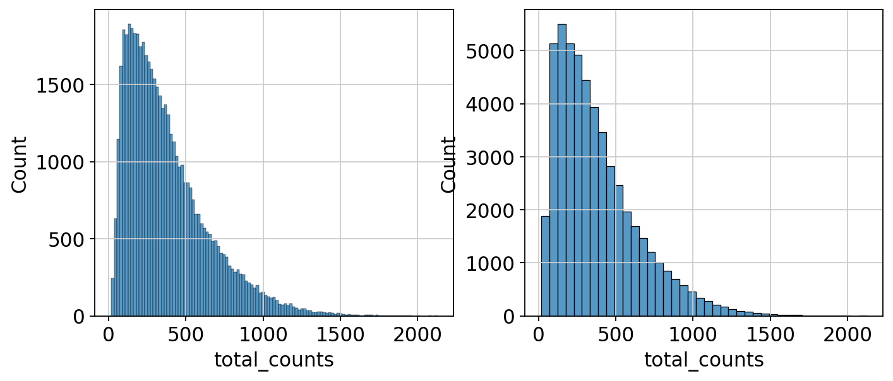
Cell Filtering and Preprocessing in Single-Cell RNA-Seq Analysis
In this section, we are performing a series of filtering steps to preprocess the single-cell RNA sequencing (scRNA-seq) data stored in the adata_section object. The filtering aims to retain high-quality cells and genes for downstream analyses. The following steps are applied:
- Filter Cells by Minimum Counts:
- We filter out cells that have fewer than 200 counts. This helps to exclude low-quality cells that may not provide reliable information.
sc.pp.filter_cells(adata_section, min_counts=200)- Filter Cells by Maximum Counts:
- We also filter out cells with more than 25,000 counts to remove potential doublets or outlier cells that may artificially inflate the count data
sc.pp.filter_cells(adata_section, max_counts=25000)Filter Based on Mitochondrial Gene Expression:
- We further refine our dataset by excluding cells that have more than 10% of their total counts coming from mitochondrial genes.
adata_section = adata_section[adata_section.obs["pct_counts_mt"] < 10].copy()- Filter Genes by Minimum Cells:
- Finally, we filter out genes that are detected in fewer than 20 cells, ensuring that we retain only those genes that have sufficient expression across our dataset.
Filter out genes that are detected in less than 20 cells
## EX 8
### Hint: use sc.pp.filter_genes
sc.pp.filter_genes(adata_section, min_cells=20) print(f"Number of cells after filtering: {adata_section.n_obs}")Number of cells after filtering: 36206Perform PCA and UMAP and cluster with Leiden Algorithm
sc.pp.pca(adata_section)
sc.pp.neighbors(adata_section)
sc.tl.umap(adata_section)
sc.tl.leiden(
adata_section,
key_added="clusters",
resolution=1.0,
directed=False,
n_iterations=2
)plt.rcParams["figure.figsize"] = (8,8)
sc.pl.umap(adata_section, color=["total_counts", "n_genes_by_counts", "clusters"], wspace=0.2)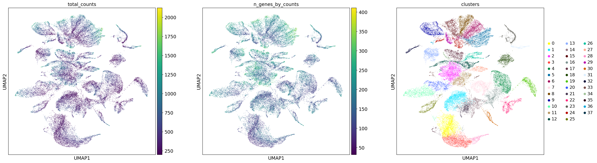
Some stats:
print('Number of Neurotransmitters: ', len(adata_section.obs['neurotransmitter'].unique()))
print('Number of Classes: ', len(adata_section.obs['class'].unique()))
print('Number of Subclasses: ', len(adata_section.obs['subclass'].unique()))
print('Number of Supertype: ', len(adata_section.obs['supertype'].unique()))
print('Number of Cluster: ', len(adata_section.obs['cluster'].unique()))Number of Neurotransmitters: 7
Number of Classes: 25
Number of Subclasses: 136
Number of Supertype: 420
Number of Cluster: 1000The filtering step performed by the authors of the paper is done differently than the basic one we just performed. The metadata is given only for the filtered object. For this reason we will filter our object to keep only spots that passed the quality control for the Allen Brain Atlas standards.
# filter spots in adata_section and keep only the ones that are present in metadata
adata_section = adata[adata.obs.index.isin(cell_metadata_extended_sub.index)]
# reindex cell_metadata_ext_sub to match the index order of adata_section.obs
cell_metadata_extended_sub = cell_metadata_extended_sub.reindex(adata_section.obs.index)
# add metadata to the metadata field in an anndata object : adata.obj
adata_section.obs = cell_metadata_extended_sub
print(f"The filtered Section 80 dataset has {adata_section.shape[0]} cells and {adata_section.shape[1]} genes.")The filtered Section 80 dataset has 37068 cells and 1122 genes. To free RAM, we delete the adata object as we will use only the section:
del adata Some spatial tools require the spatial coordinates can be stored as spatial or X_spatial
## EX 9
# Add X_spatial to the right field
x_spatial = np.array(adata_section.obs[['x','y']])
adata_section.obsm['X_spatial'] = x_spatial
adata_section.obsm['X_spatial']array([[5.87382373, 1.24637434],
[5.0668137 , 1.21544436],
[4.68106119, 1.28715849],
...,
[0.97304079, 4.80513099],
[0.86566165, 4.29416095],
[0.84111779, 3.8952338 ]]) Once the spatial coordinates are stored in .obsm[X_spatial] you can plot the section with sc.pl.spatial
# Generate the spatial plot
sc.pl.spatial(adata_section, color='class', color_map='Accent_r', spot_size=0.04, title='Section 80 colored by Class')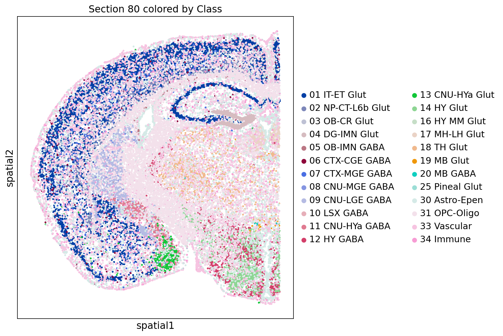
## EX 10
# Subset the AnnData object to keep only cells belonging to a specific class
# and plot them again with sc.pl.spatial
adata_section_one_class = adata_section[adata_section.obs['class']=='01 IT-ET Glut']
sc.pl.spatial(adata_section_one_class, color='class', color_map='Accent_r', spot_size=0.04, title='Section 80 (one Class)')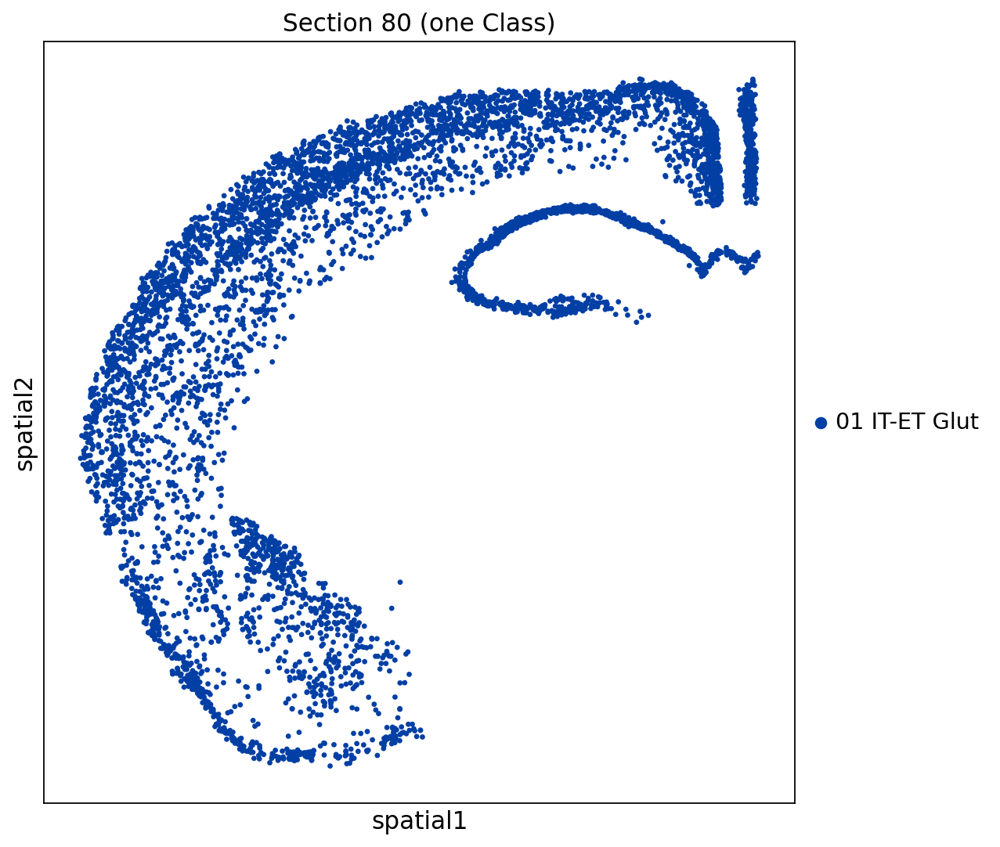
Plot gene expression in space
Since each spot in the spatial data corresponds to a specific location and its associated gene expression profile, we can visualize spatial gene expression.
We can do this using the function sc.pl.spatial, it requires the name of the variable index to indicate the genes to plot.
Let’s take a look at adata_section.var:
adata_section.var.head()| gene_symbol | name | mapped_ncbi_identifier | |
|---|---|---|---|
| gene_identifier | |||
| ENSMUSG00000024798 | Htr7 | 5-hydroxytryptamine (serotonin) receptor 7 | NCBIGene:15566 |
| ENSMUSG00000042385 | Gzmk | granzyme K | NCBIGene:14945 |
| ENSMUSG00000036198 | Arhgap36 | Rho GTPase activating protein 36 | NCBIGene:75404 |
| ENSMUSG00000028780 | Sema3c | sema domain, immunoglobulin domain (Ig), short... | NCBIGene:20348 |
| ENSMUSG00000015843 | Rxrg | retinoid X receptor gamma | NCBIGene:20183 |
Change the index of the adata_section.var to gene_symbol for clarity
# Reset the index to turn the current index into a column
adata_section.var.reset_index(inplace=True)
adata_section.var.set_index('gene_symbol', inplace=True)
adata_section.var.head()| gene_identifier | name | mapped_ncbi_identifier | |
|---|---|---|---|
| gene_symbol | |||
| Htr7 | ENSMUSG00000024798 | 5-hydroxytryptamine (serotonin) receptor 7 | NCBIGene:15566 |
| Gzmk | ENSMUSG00000042385 | granzyme K | NCBIGene:14945 |
| Arhgap36 | ENSMUSG00000036198 | Rho GTPase activating protein 36 | NCBIGene:75404 |
| Sema3c | ENSMUSG00000028780 | sema domain, immunoglobulin domain (Ig), short... | NCBIGene:20348 |
| Rxrg | ENSMUSG00000015843 | retinoid X receptor gamma | NCBIGene:20183 |
# Define genes to plot
genes_toplot = ['Zic1',
'Penk',
'Gfap',
'Dlx6',
'Cux2',
'Fezf2',
'Nr4a2',
'Satb2']
sc.pl.spatial(adata_section, color=genes_toplot,spot_size=0.04)
Plot your favourite gene/s
#genes_toplot = [.....]
#sc.pl.spatial(adata_section, color=genes_toplot,spot_size=0.04)adata_section.write_h5ad(f"./outputs/adata_section80.h5ad")# Record the end time
end_time = time.time()
# Calculate elapsed time in minutes
elapsed_time = (end_time - start_time) / 60
print(f"Execution Time: {elapsed_time:.2f} minutes")Execution Time: 5.45 minutesPrediction of spatial patterns for unmeasured genes using scRNA-seq data with SpaGE
start_time = time.time()from SpaGE.main import SpaGE
import scipy.stats as stSpaGE takes as input the (targeted) spatial dataset (query) and a single-cell RNA dataset used as reference. The two datasets should be generated under the same conditions (same species, tissue, region) as much as possible.
We will use Mouse whole-brain transcriptomic cell type atlas (Hongkui Zeng).This scRNAseq dataset profiled 7 million cells (approximately 4.0 million cells passing quality control). More in detail:
1.7 million single cell transcriptomes spanning the whole adult mouse brain using 10Xv2 chemistry (WMB-10Xv2)
2.3 million single cell transcriptomes spanning the whole adult mouse brain using 10Xv3 chemistry (WMB-10Xv3)
1687 single cell transcriptomes spanning the whole adult mouse brain using the 10X Multiome chemistry (WMB-10XMulti)
Let’s check the names of the files in each of the three single-cell collections:
abc_cache.list_data_files('WMB-10Xv2')['WMB-10Xv2-CTXsp/log2',
'WMB-10Xv2-CTXsp/raw',
'WMB-10Xv2-HPF/log2',
'WMB-10Xv2-HPF/raw',
'WMB-10Xv2-HY/log2',
'WMB-10Xv2-HY/raw',
'WMB-10Xv2-Isocortex-1/log2',
'WMB-10Xv2-Isocortex-1/raw',
'WMB-10Xv2-Isocortex-2/log2',
'WMB-10Xv2-Isocortex-2/raw',
'WMB-10Xv2-Isocortex-3/log2',
'WMB-10Xv2-Isocortex-3/raw',
'WMB-10Xv2-Isocortex-4/log2',
'WMB-10Xv2-Isocortex-4/raw',
'WMB-10Xv2-MB/log2',
'WMB-10Xv2-MB/raw',
'WMB-10Xv2-OLF/log2',
'WMB-10Xv2-OLF/raw',
'WMB-10Xv2-TH/log2',
'WMB-10Xv2-TH/raw']abc_cache.list_data_files('WMB-10Xv3')['WMB-10Xv3-CB/log2',
'WMB-10Xv3-CB/raw',
'WMB-10Xv3-CTXsp/log2',
'WMB-10Xv3-CTXsp/raw',
'WMB-10Xv3-HPF/log2',
'WMB-10Xv3-HPF/raw',
'WMB-10Xv3-HY/log2',
'WMB-10Xv3-HY/raw',
'WMB-10Xv3-Isocortex-1/log2',
'WMB-10Xv3-Isocortex-1/raw',
'WMB-10Xv3-Isocortex-2/log2',
'WMB-10Xv3-Isocortex-2/raw',
'WMB-10Xv3-MB/log2',
'WMB-10Xv3-MB/raw',
'WMB-10Xv3-MY/log2',
'WMB-10Xv3-MY/raw',
'WMB-10Xv3-OLF/log2',
'WMB-10Xv3-OLF/raw',
'WMB-10Xv3-P/log2',
'WMB-10Xv3-P/raw',
'WMB-10Xv3-PAL/log2',
'WMB-10Xv3-PAL/raw',
'WMB-10Xv3-STR/log2',
'WMB-10Xv3-STR/raw',
'WMB-10Xv3-TH/log2',
'WMB-10Xv3-TH/raw']abc_cache.list_data_files('WMB-10XMulti')['WMB-10XMulti/log2', 'WMB-10XMulti/raw']Let’s check the size of the files in each of the three single-cell collections:
print(f"Size of WMB-10Xv2 data: {abc_cache.get_directory_data_size('WMB-10Xv2')}")Size of WMB-10Xv2 data: 104.16 GBprint(f"Size of WMB-10Xv3 data: {abc_cache.get_directory_data_size('WMB-10Xv3')}")Size of WMB-10Xv3 data: 176.41 GBprint(f"Size of WMB-10X Multi data: {abc_cache.get_directory_data_size('WMB-10XMulti')}")Size of WMB-10X Multi data: 211.28 MB The size is of the combined single-cell object is around 280GB. For this reason, the three objects have been previously downloaded, concatenated, preprocessed and subsetted to obtain NNN cells. For your knowledge, you can find all the steps in obtain_scref.py.
Let’s read the resulting single-cell AnnData object:
adata_sc = ad.read_h5ad(f"{spatial_wd}/day3/SpaGE_data/sc_adata_1percent.h5ad")Inspect the object:
adata_scAnnData object with n_obs × n_vars = 28981 × 32285
obs: 'cell_barcode', 'barcoded_cell_sample_label', 'library_label', 'feature_matrix_label', 'entity', 'brain_section_label', 'library_method', 'region_of_interest_acronym', 'donor_label', 'donor_genotype', 'donor_sex', 'dataset_label', 'x', 'y', 'cluster_alias'adata_sc.obs| cell_barcode | barcoded_cell_sample_label | library_label | feature_matrix_label | entity | brain_section_label | library_method | region_of_interest_acronym | donor_label | donor_genotype | donor_sex | dataset_label | x | y | cluster_alias | |
|---|---|---|---|---|---|---|---|---|---|---|---|---|---|---|---|
| cell_label | |||||||||||||||
| GTATTCTCAGCTATTG-045_C01 | GTATTCTCAGCTATTG | 045_C01 | L8TX_180829_01_C10 | WMB-10Xv2-TH | cell | NaN | 10Xv2 | TH | Snap25-IRES2-Cre;Ai14-407905 | Snap25-IRES2-Cre/wt;Ai14(RCL-tdT)/wt | F | WMB-10Xv2 | 12.420248 | -10.367616 | 5076 |
| GTGTGATCACCAGCGT-468_A02 | GTGTGATCACCAGCGT | 468_A02 | L8TX_201217_01_D07 | WMB-10Xv3-MB | cell | NaN | 10Xv3 | MB | Snap25-IRES2-Cre;Ai14-556231 | Ai14(RCL-tdT)/wt | F | WMB-10Xv3 | 1.571478 | 23.592803 | 14956 |
| TAACCAGCACCAAATC-204.2_A01 | TAACCAGCACCAAATC | 204.2_A01 | L8TX_200122_01_F12 | WMB-10Xv3-MB | cell | NaN | 10Xv3 | MB | Snap25-IRES2-Cre;Ai14-504535 | Snap25-IRES2-Cre/wt;Ai14(RCL-tdT)/wt | F | WMB-10Xv3 | -12.491472 | 11.322906 | 5231 |
| AGCGTCGGTTCAGCGC-420_C06 | AGCGTCGGTTCAGCGC | 420_C06 | L8TX_201106_01_G03 | WMB-10Xv3-MB | cell | NaN | 10Xv3 | MB | Snap25-IRES2-Cre;Ai14-551017 | Ai14(RCL-tdT)/wt | M | WMB-10Xv3 | -10.406498 | 11.711900 | 5230 |
| AGACAAAAGAACTCCT-278_B03 | AGACAAAAGAACTCCT | 278_B03 | L8TX_200702_01_H01 | WMB-10Xv3-TH | cell | NaN | 10Xv3 | TH | Snap25-IRES2-Cre;Ai14-529474 | Snap25-IRES2-Cre/wt;Ai14(RCL-tdT)/wt | F | WMB-10Xv3 | 5.455338 | -13.476950 | 5101 |
| ... | ... | ... | ... | ... | ... | ... | ... | ... | ... | ... | ... | ... | ... | ... | ... |
| CGAGTTACAGCACAGA-367_B04 | CGAGTTACAGCACAGA | 367_B04 | L8TX_200924_01_G05 | WMB-10Xv3-STR | cell | NaN | 10Xv3 | STRd | Snap25-IRES2-Cre;Ai14-544400 | Snap25-IRES2-Cre/wt;Ai14(RCL-tdT)/wt | F | WMB-10Xv3 | 11.337216 | 10.187603 | 1092 |
| GCCCGAAGTGTTAACC-136_A01 | GCCCGAAGTGTTAACC | 136_A01 | L8TX_190716_01_E07 | WMB-10Xv3-STR | cell | NaN | 10Xv3 | LSX | Snap25-IRES2-Cre;Ai14-471388 | Snap25-IRES2-Cre/wt;Ai14(RCL-tdT)/wt | F | WMB-10Xv3 | -10.906924 | 11.981008 | 5230 |
| TAGGGTTCACTCGATA-412_B07 | TAGGGTTCACTCGATA | 412_B07 | L8TX_201030_01_D12 | WMB-10Xv3-HPF | cell | NaN | 10Xv3 | RHP | Snap25-IRES2-Cre;Ai14-550849 | Snap25-IRES2-Cre/wt;Ai14(RCL-tdT)/wt | M | WMB-10Xv3 | 3.910954 | 22.416977 | 14939 |
| CATCGGGTCAGTTTGG-033_A01 | CATCGGGTCAGTTTGG | 033_A01 | L8TX_180712_01_H05 | WMB-10Xv2-Isocortex-4 | cell | NaN | 10Xv2 | TEa-PERI-ECT | Snap25-IRES2-Cre;Ai14-395345 | Snap25-IRES2-Cre/wt;Ai14(RCL-tdT)/wt | F | WMB-10Xv2 | 11.004389 | 16.859750 | 649 |
| CGTGTAACATCGATTG-003_D01 | CGTGTAACATCGATTG | 003_D01 | L8TX_180115_01_F11 | WMB-10Xv2-Isocortex-3 | cell | NaN | 10Xv2 | VIS | Snap25-IRES2-Cre;Ai14-366678 | Snap25-IRES2-Cre/wt;Ai14(RCL-tdT)/wt | M | WMB-10Xv2 | 18.697296 | -6.886807 | 188 |
28981 rows × 15 columns
Add feature metadata to the AnnData object
genes = pd.read_csv(f"{spatial_wd}/day3/abc_download_root/metadata/WMB-10X/gene.csv",index_col=0)
genes.head()| gene_symbol | name | mapped_ncbi_identifier | comment | |
|---|---|---|---|---|
| gene_identifier | ||||
| ENSMUSG00000051951 | Xkr4 | X-linked Kx blood group related 4 | NCBIGene:497097 | NaN |
| ENSMUSG00000089699 | Gm1992 | predicted gene 1992 | NaN | NaN |
| ENSMUSG00000102331 | Gm19938 | predicted gene, 19938 | NaN | NaN |
| ENSMUSG00000102343 | Gm37381 | predicted gene, 37381 | NaN | NaN |
| ENSMUSG00000025900 | Rp1 | retinitis pigmentosa 1 (human) | NCBIGene:19888 | NaN |
adata_sc.var = genes# Reset the index to turn the current index into a column
adata_sc.var.reset_index(inplace=True)
adata_sc.var.set_index('gene_symbol', inplace=True)
adata_sc.var.head()| gene_identifier | name | mapped_ncbi_identifier | comment | |
|---|---|---|---|---|
| gene_symbol | ||||
| Xkr4 | ENSMUSG00000051951 | X-linked Kx blood group related 4 | NCBIGene:497097 | NaN |
| Gm1992 | ENSMUSG00000089699 | predicted gene 1992 | NaN | NaN |
| Gm19938 | ENSMUSG00000102331 | predicted gene, 19938 | NaN | NaN |
| Gm37381 | ENSMUSG00000102343 | predicted gene, 37381 | NaN | NaN |
| Rp1 | ENSMUSG00000025900 | retinitis pigmentosa 1 (human) | NCBIGene:19888 | NaN |
Set up inputs for SpaGE:
# Extract the count data and transform them into a Pandas DataFrame
RNA_data = pd.DataFrame(adata_sc.X.todense())# Add gene names to the RNA_data columns
RNA_data.columns = adata_sc.var.index# Filter lowely expressed genes
Genes_count = np.sum(RNA_data > 0, axis=1)
RNA_data = RNA_data.loc[Genes_count >=10,:]
del Genes_count# Normalization
def Log_Norm_cpm(x):
return np.log(((x/np.sum(x))*1000000) + 1)
RNA_data = RNA_data.apply(Log_Norm_cpm,axis=0)# transpose RNA_data to have rows = genes and columns = cells
RNA_data = RNA_data.TRNA_data.head()| 0 | 1 | 2 | 3 | 4 | 5 | 6 | 7 | 8 | 9 | ... | 28971 | 28972 | 28973 | 28974 | 28975 | 28976 | 28977 | 28978 | 28979 | 28980 | |
|---|---|---|---|---|---|---|---|---|---|---|---|---|---|---|---|---|---|---|---|---|---|
| gene_symbol | |||||||||||||||||||||
| Xkr4 | 4.552345 | 0.0 | 4.130508 | 0.0 | 5.504673 | 2.214984 | 2.583386 | 3.238043 | 2.214984 | 3.911375 | ... | 0.0 | 4.673730 | 4.253778 | 2.583386 | 3.733048 | 4.673730 | 0.0 | 0.0 | 2.852008 | 2.583386 |
| Gm1992 | 0.000000 | 0.0 | 0.000000 | 0.0 | 0.000000 | 0.000000 | 0.000000 | 0.000000 | 0.000000 | 5.087625 | ... | 0.0 | 6.182114 | 0.000000 | 0.000000 | 0.000000 | 5.087625 | 0.0 | 0.0 | 0.000000 | 0.000000 |
| Gm19938 | 4.665658 | 0.0 | 0.000000 | 0.0 | 5.354088 | 0.000000 | 0.000000 | 0.000000 | 0.000000 | 5.576285 | ... | 0.0 | 5.067980 | 3.981880 | 4.665658 | 0.000000 | 3.981880 | 0.0 | 0.0 | 0.000000 | 3.981880 |
| Gm37381 | 0.000000 | 0.0 | 0.000000 | 0.0 | 0.000000 | 0.000000 | 0.000000 | 0.000000 | 0.000000 | 0.000000 | ... | 0.0 | 0.000000 | 0.000000 | 0.000000 | 0.000000 | 0.000000 | 0.0 | 0.0 | 0.000000 | 0.000000 |
| Rp1 | 0.000000 | 0.0 | 0.000000 | 0.0 | 0.000000 | 0.000000 | 0.000000 | 0.000000 | 0.000000 | 0.000000 | ... | 0.0 | 0.000000 | 0.000000 | 0.000000 | 0.000000 | 0.000000 | 0.0 | 0.0 | 0.000000 | 0.000000 |
5 rows × 28981 columns
# Drop any row with at least one NaN value
RNA_data = RNA_data.dropna() # This will drop any row with at least one NaN valueHow many genes do the spatial and single-cell data set have in common?
How many genes are measured in the single-cell dataset that are not measured in the spatial dataset?
## EX 11
## Hint: use .intersection
gene_intersection = set(list(adata_section.var.index)).intersection(set(list(adata_sc.var.index)))
## Hint: use a set operation
genes_not_intersection = list(set(RNA_data.index) - set(adata_section.var.index))
print(f"Number of genes measured both in the sc and spatial datasets: {len(gene_intersection)}")
print(f"Number of genes measured in the sc reference only: {len(genes_not_intersection)}")Number of genes measured both in the sc and spatial datasets: 1122
Number of genes measured in the sc reference only: 27078# Extract count matrix from adata_section and rename index and column names
spatial_data = pd.DataFrame(adata_section.X)
spatial_data.index = adata_section.obs.index
spatial_data.columns = adata_section.var.index# Normalize spatial_data
spatial_data = spatial_data.apply(Log_Norm_cpm,axis=0)brain_region_specific_genes = [
"Bcl11b", "Cux2", "Fezf2", "Tbr1", "Satb2", # isocortex
"Foxp2", # Striatum specific
"Penk", # Basal ganglia specific
"Zic1", # Cerebellum specific
"Hoxb2", # Hindbrain specific
"Dlx6", # Subpallium specific
]
# Checking for genes from brain_region_specific_genes that are measured by spatial data
overlap_genes = list(set(list(spatial_data.columns)) & set(brain_region_specific_genes))
overlap_genes['Satb2', 'Cux2', 'Zic1', 'Penk', 'Bcl11b', 'Fezf2', 'Dlx6']# Checking for genes from brain_region_specific_genes that are NOT measured by spatial data
non_overlap_genes = list(set(brain_region_specific_genes) - set(overlap_genes))Leave-one-gene-out cross validation
Define the function to predict genes measured in the spatial dataset to have a ground truth and plot the measured expression next to the predicted one. Calculate Spearman correlation between the measured and predicted expression.
import matplotlib.gridspec as gridspec # Import for more precise subplot layout control
plt.style.use('dark_background')
def plot_measured_predicted(Gene_set, corr_df):
for i in Gene_set:
# Predict the expression of the current gene using the SpaGE method
Imp_Genes = SpaGE(spatial_data.drop(i, axis=1), RNA_data.T, n_pv=30, genes_to_predict=[i])
# Calculate the Spearman correlation between measured and predicted values
corr_df[i] = st.spearmanr(spatial_data[i], Imp_Genes[i])[0]
# Create a figure with two subplots (1 row, 2 columns)
fig = plt.figure(figsize=(15, 8)) # Adjust figure size if needed
gs = gridspec.GridSpec(1, 3, width_ratios=[1, 1, 0.05], wspace=0.3) # Create a gridspec for better control
# --- Measured Gene Expression Plot ---
ax0 = fig.add_subplot(gs[0]) # First plot
cmap_measured = spatial_data[i]
cmap_measured[cmap_measured > np.percentile(cmap_measured, 99)] = np.percentile(cmap_measured, 99)
sc1 = ax0.scatter(adata_section.obs['x'], -adata_section.obs['y'], s=1, c=cmap_measured, alpha=1)
ax0.set_title(f'Measured Expression: {i}', fontsize=12)
ax0.set_xlabel('X coordinate')
ax0.set_ylabel('Y coordinate')
ax0.set_aspect('equal', adjustable='box')
ax0.grid(False)
# --- Predicted Gene Expression Plot ---
ax1 = fig.add_subplot(gs[1]) # Second plot
cmap_predicted = Imp_Genes[i]
cmap_predicted[cmap_predicted > np.percentile(cmap_predicted, 99)] = np.percentile(cmap_predicted, 99)
sc2 = ax1.scatter(adata_section.obs['x'], -adata_section.obs['y'], s=1, c=cmap_predicted, alpha=1)
ax1.set_title(f'Predicted Expression: {i}', fontsize=12)
ax1.set_xlabel('X coordinate')
ax1.set_ylabel('Y coordinate')
ax1.set_aspect('equal', adjustable='box')
ax1.grid(False)
# Create a colorbar on the far right
cbar_ax = fig.add_subplot(gs[2]) # Third subplot (narrow space for the color bar)
cbar = fig.colorbar(sc1, cax=cbar_ax) # Assign the color bar to the third subplot
cbar.set_label(i)
# Show the plot
plt.tight_layout() # Adjust spacing to avoid overlap
plt.show()# Since we have a ground truth, create a Series to store Spearman correlation results for each gene
# Our gene_set in this case is a set of genes shared between the spatial and the sc datasets
correlations_spage = pd.Series(index=overlap_genes)
plot_measured_predicted(overlap_genes,correlations_spage)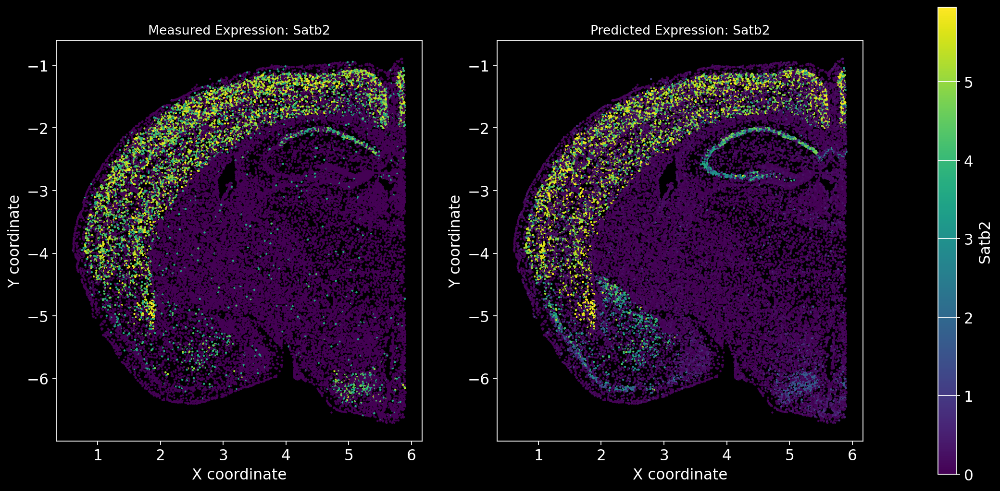
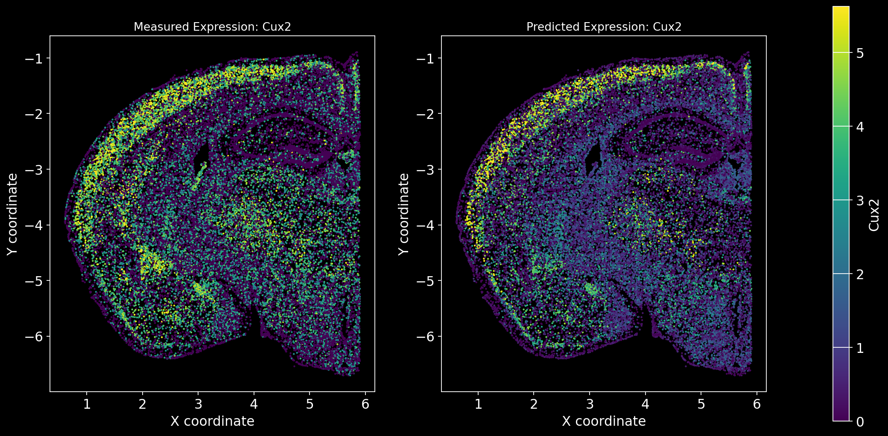
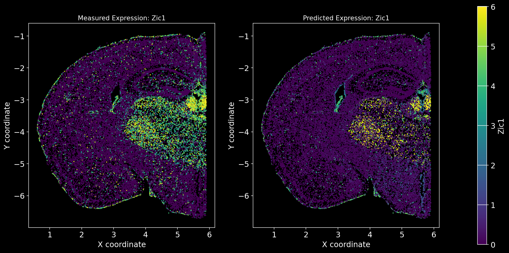
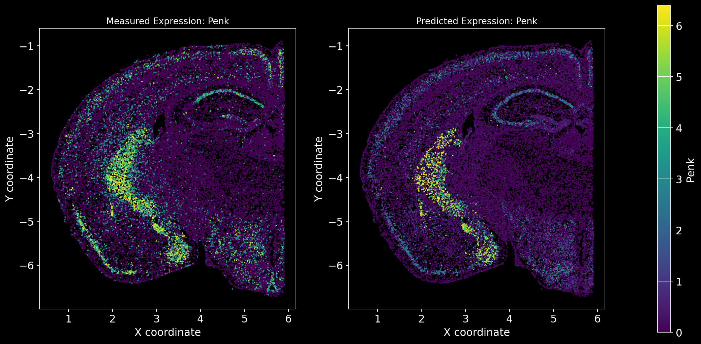
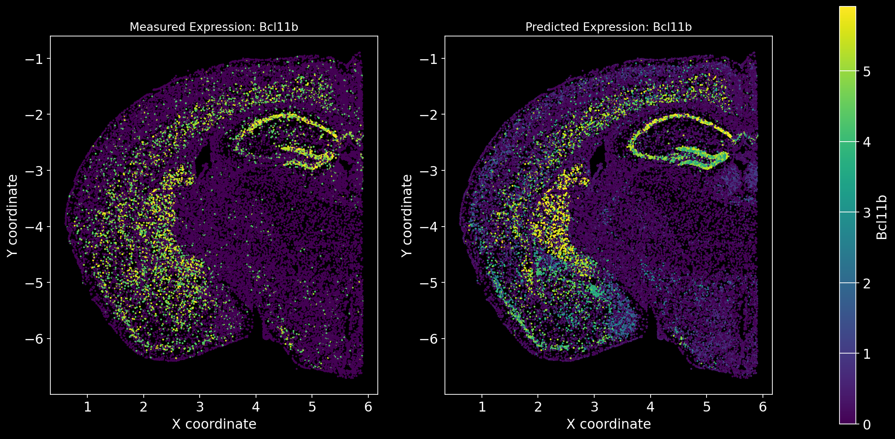
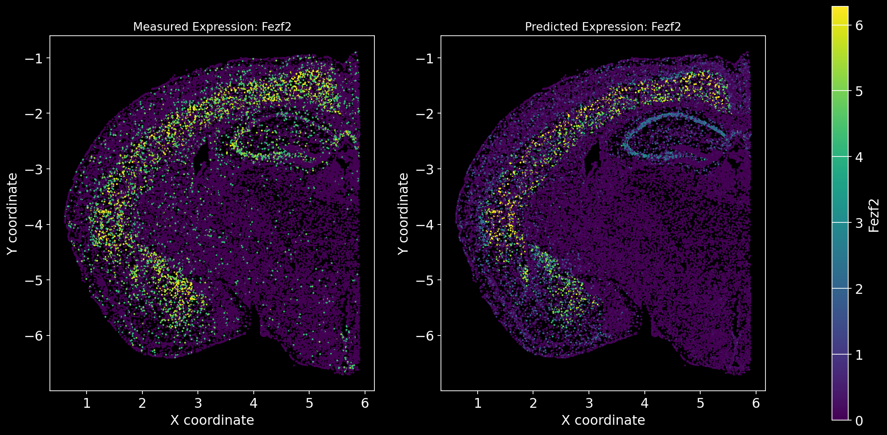
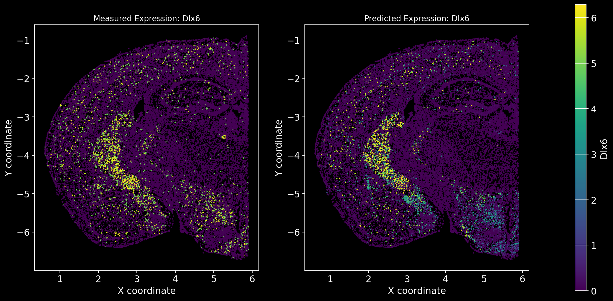
Let’s take a look at the Spearman Correlations between measured and predicted gene expression:
correlations_spage = pd.DataFrame(correlations_spage, columns=["correlations_spage"])
correlations_spage| correlations_spage | |
|---|---|
| Satb2 | 0.569667 |
| Cux2 | 0.624125 |
| Zic1 | 0.560184 |
| Penk | 0.462083 |
| Bcl11b | 0.476352 |
| Fezf2 | 0.428165 |
| Dlx6 | 0.401532 |
Is there any other gene expression (measured in the spatial dataset) you would like to predict?
list(gene_intersection)[:10]['Adgrf5',
'Epha1',
'Ptpru',
'Scnn1a',
'Adam18',
'Prdm8',
'Hgf',
'Hoxb4',
'Ptpn14',
'Chrna4']# Define the set of genes (from the gene_intersection list) where we will perform leave-one-out cross-validation
Gene_set = ['Grm3'] # has to be a list
# Since we have a ground truth, create a Series to store Spearman correlation results for each gene
correlations_spage_extragenes = pd.Series(index=Gene_set)
plot_measured_predicted(Gene_set,correlations_spage_extragenes)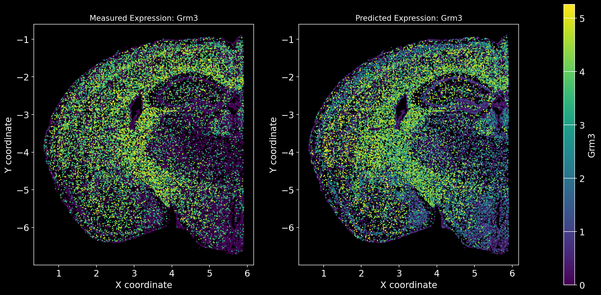
# print Correlations
correlations_spage_extragenes = pd.DataFrame(correlations_spage_extragenes, columns=["correlations_spage"])
correlations_spage_extragenes| correlations_spage | |
|---|---|
| Grm3 | 0.637015 |
Predict unmeasured genes
Define a function to predict unmeasured genes in the spatial dataset.
In this case correlations cannot be calculated as there is no ground truth available.
def predict_unmeasured_genes(Gene_set):
for i in Gene_set:
# Predict the expression of the current gene using the SpaGE method
Imp_Genes = SpaGE(spatial_data, RNA_data.T, n_pv=30, genes_to_predict=[i])
# Create a new figure for each gene's predicted expression
plt.figure(figsize=(10, 8))
# Get predicted gene expression values and clip both lower and upper bounds
cmap_predicted = Imp_Genes[i]
# Clip the minimum values at 0 (no negatives) and limit extreme values at 99th percentile
cmap_predicted = np.clip(cmap_predicted, 0, np.percentile(cmap_predicted, 99))
# Plot scatter plot for the predicted gene expression
sc2 = plt.scatter(adata_section.obs['x'], -adata_section.obs['y'], s=1, c=cmap_predicted, alpha=1)
# Set plot title and labels
plt.title(f'Predicted Expression: {i}', fontsize=12)
plt.xlabel('X coordinate')
plt.ylabel('Y coordinate')
plt.gca().set_aspect('equal', adjustable='box')
plt.grid(False)
# Create a colorbar on the same plot
cbar = plt.colorbar(sc2)
cbar.set_label(i)
# Adjust layout and display the plot
plt.tight_layout()
plt.show()# Define the set of genes (from the non_overlap_genes list) to be predicted by SpaGE
predict_unmeasured_genes(non_overlap_genes)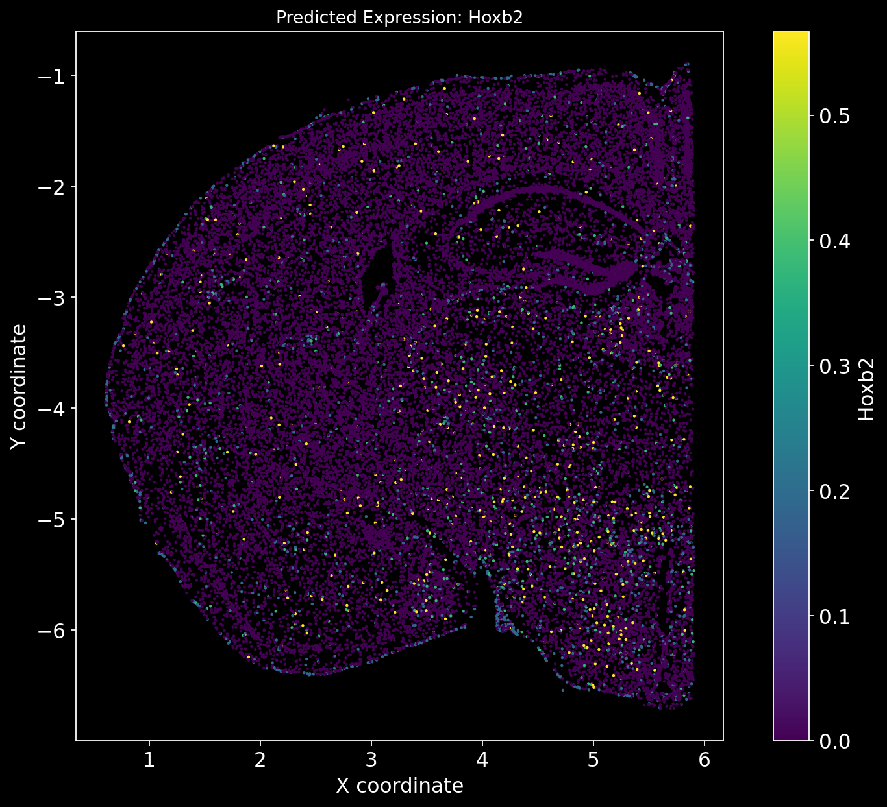
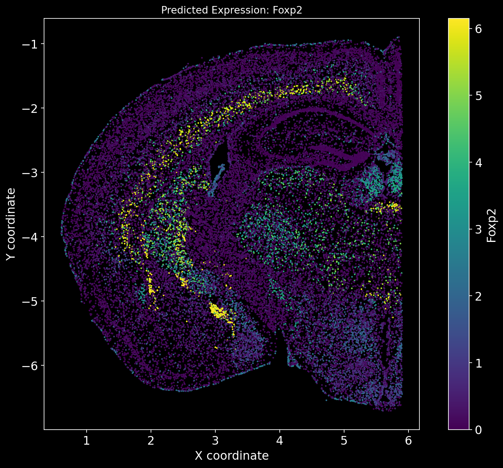
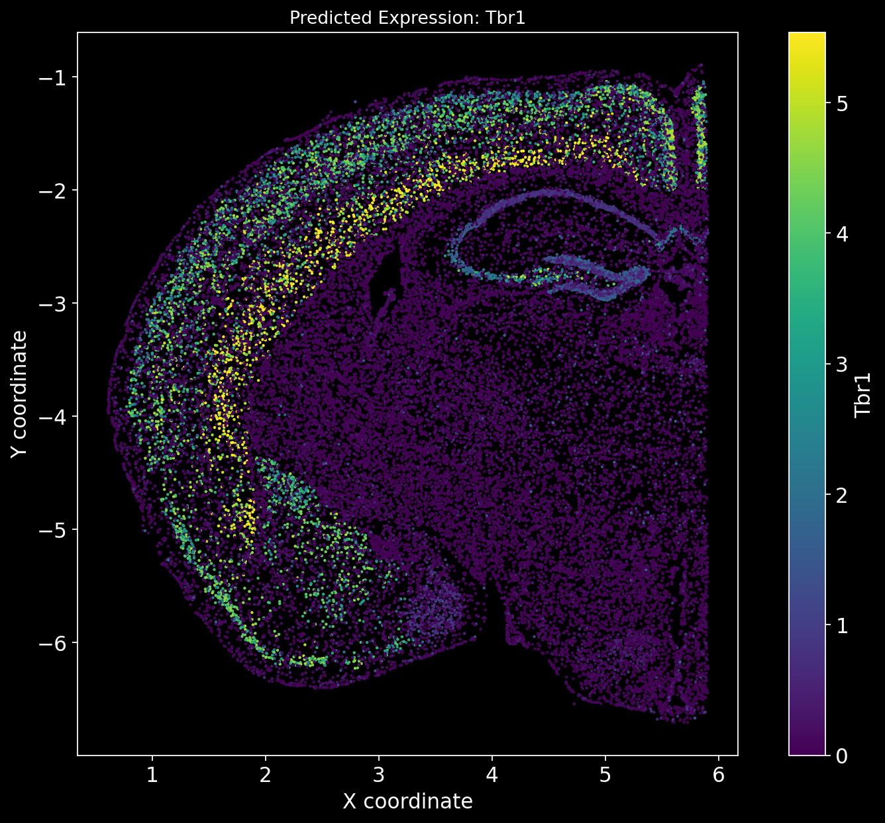
There is no definitive ground truth for the real gene expression profiles of these genes. However, an alternative approach could be to plot region-specific genes and verify whether their expression aligns with the expected brain regions.
For example, Tbr1 is known to be Isocortex-specific; does its expression show higher levels in the Isocortex? Similarly, Foxp2 is Striatum-specific; does it exhibit a Striatum-specific expression pattern?
Use this resource to check region-specific gene expression.
Is there any other gene expression (NOT measured in the spatial dataset) you would like to predict?
Can you think of other genes that we could use to visually validate the accuracy of SpaGE by checking if their expression patterns correspond to their known brain regions? Plot them!
#list(genes_not_intersection)[:10]#Gene_set = [...]
#predict_unmeasured_genes(Gene_set)# Record the end time
end_time = time.time()
# Calculate elapsed time in minutes
elapsed_time = (end_time - start_time) / 60
print(f"Execution Time SpaGE: {elapsed_time:.2f} minutes")Execution Time SpaGE: 12.04 minutesLet’s delete some objects we won’t be using anymore to free some RAM:
del RNA_data, spatial_dataUnmeasured gene imputation with Tangram
start_time = time.time()import tangram as tg
import matplotlib.pyplot as plt
from sklearn.preprocessing import MinMaxScaler
sc.settings.verbosity = 3
sc.settings.set_figure_params(dpi=80, facecolor="white")Common gene set between reference and spatial dataset
We want to select our training genes. These genes are shared between the two datasets and should capture the biological variance between cell types. For this, we first compute marker genes on the single-cell data and then use Tangram’s preprocessing function to subset to those genes that are also present in the spatial data.
markers = list(set.intersection(set(adata_sc.var_names), set(adata_section.var_names)))
len(markers)1122 tg.pp_adatas computes the overlap between single-cell data and spatial data on the list of genes provided in the genes argument, it then stores the resulting gene set under ‘training_genes’ in both adata objects under the .uns key and enforces consistent ordering of the genes.
tg.pp_adatas(adata_sc, adata_section, genes=markers) # using the same single-cell reference that we used to run SpaGEfiltered out 4067 genes that are detected in less than 1 cellsINFO:root:1122 training genes are saved in `uns``training_genes` of both single cell and spatial Anndatas.
INFO:root:1122 overlapped genes are saved in `uns``overlap_genes` of both single cell and spatial Anndatas.
INFO:root:uniform based density prior is calculated and saved in `obs``uniform_density` of the spatial Anndata.
INFO:root:rna count based density prior is calculated and saved in `obs``rna_count_based_density` of the spatial Anndata.Check that the function performs as we expect:
assert "training_genes" in adata_sc.uns
assert "training_genes" in adata_section.uns
print(f"Number of training_genes: {len(adata_sc.uns['training_genes'])}")Number of training_genes: 1122Computing the map from single-cells to spatial voxels
Having specified the training genes, we can now create the map from dissociated single-cell measurements to the spatial locations. For this, we are going to use the map_cells_to_space function from tangram. This function has two different modes, mode='cells' and mode='clusters'. The latter only maps averaged single-cells which makes the mapping computationally faster and more robust when mapping between specimen.
ad_map = tg.map_cells_to_space(
adata_sc,
adata_section,
mode="cells",
density_prior="rna_count_based",
num_epochs=500,
device="cpu", # or: cpu
)
<font size="3"> I run `tg.map_cells_to_space` for you (takes a while to run), let's just read the resulting AnnData object
::: {#8849a82d-8176-4cff-93e0-ab07d8e14cda .cell execution_count=90}
``` {.python .cell-code}
ad_map = ad.read_h5ad(f"{spatial_wd}/day3/Tangram_data/ad_map_tangram.h5ad")
ad_mapAnnData object with n_obs × n_vars = 28981 × 37068
obs: 'cell_barcode', 'barcoded_cell_sample_label', 'library_label', 'feature_matrix_label', 'entity', 'brain_section_label', 'library_method', 'region_of_interest_acronym', 'donor_label', 'donor_genotype', 'donor_sex', 'dataset_label', 'x', 'y', 'cluster_alias'
var: 'brain_section_label', 'feature_matrix_label', 'donor_label', 'donor_genotype', 'donor_sex', 'cluster_alias', 'x', 'y', 'z', 'subclass_confidence_score', 'cluster_confidence_score', 'high_quality_transfer', 'neurotransmitter', 'class', 'subclass', 'supertype', 'cluster', 'neurotransmitter_color', 'class_color', 'subclass_color', 'supertype_color', 'cluster_color', 'uniform_density', 'rna_count_based_density'
uns: 'train_genes_df', 'training_history':::
We observe that Tangram’s mapping from cell i to spatial voxels j is stored in the .X property of ad_map. The meaning of the .var and .obs also changes:
- in .var we have the available metadata of the spatial data, adata_section
- in .obs we have the available metadata of the single-cell data, adata_sc
- In addition, the information about the training run is stored in the .uns key, see
.uns['training_genes_df']and.uns[training_history].
Now we can project the genes present in the single-cell data to the spatial locations. This is easily achieved by multiplying the mapping matrix stored in ad_map with the original single-cell data stored in adata_sc. Tangram already provides a convenience function which takes in a mapping and the corresponding single-cell data. The result is a spatial voxel by genes matrix which technically is identical to the original spatial data adata_section but contains expression values for all genes.
ad_ge = tg.project_genes(adata_map=ad_map, adata_sc=adata_sc)
ad_ge
<font size="3"> I run `tg.project_genes` for you, let's just read the resulting AnnData object
::: {#62f70844-0288-433e-879d-70438a1ae988 .cell execution_count=91}
``` {.python .cell-code}
ad_ge = ad.read_h5ad(f"{spatial_wd}/day3/Tangram_data/ad_ge.h5ad")
## add .obsm['X_spatial'] so we can use sc.pl.spatial to plot gene expression
ad_ge.obsm['X_spatial'] = np.array(ad_ge.obs[['x','y']])
ad_geAnnData object with n_obs × n_vars = 37068 × 28218
obs: 'brain_section_label', 'feature_matrix_label', 'donor_label', 'donor_genotype', 'donor_sex', 'cluster_alias', 'x', 'y', 'z', 'subclass_confidence_score', 'cluster_confidence_score', 'high_quality_transfer', 'neurotransmitter', 'class', 'subclass', 'supertype', 'cluster', 'neurotransmitter_color', 'class_color', 'subclass_color', 'supertype_color', 'cluster_color', 'uniform_density', 'rna_count_based_density'
var: '_index', 'comment', 'gene_identifier', 'mapped_ncbi_identifier', 'name'
obsm: 'X_spatial':::
Next, we will compare the new spatial data with the original measurements.
To do this we will plot the true expression and the predicted expression of the shared genes, as well as the Spearman correlation between the true and predicted expression in all the spots.
# Use the same set of genes that we predicted with SpaGE
# we need to make the genes all lower-case first
overlap_genes = [gene.lower() for gene in overlap_genes]
overlap_genes['satb2', 'cux2', 'zic1', 'penk', 'bcl11b', 'fezf2', 'dlx6']Plot the true expression from adata_section
sc.pl.spatial(adata_section, color=overlap_genes, spot_size=0.04)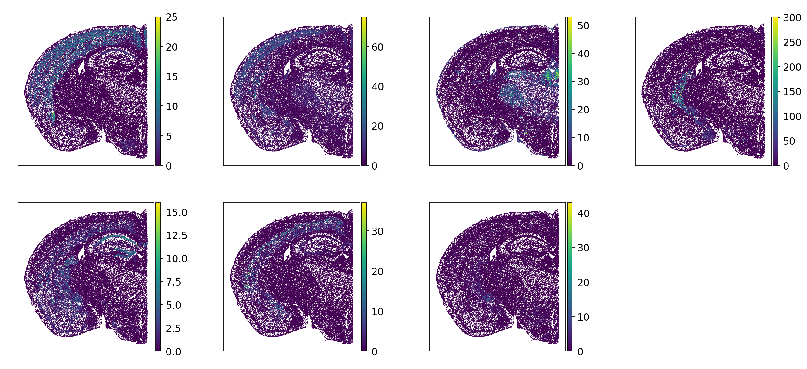
Plot the predicted expression from ad_ge
ad_ge.var.reset_index(inplace=True)
ad_ge.var.set_index('_index', inplace=True)sc.pl.spatial(ad_ge, color=overlap_genes, spot_size=0.04)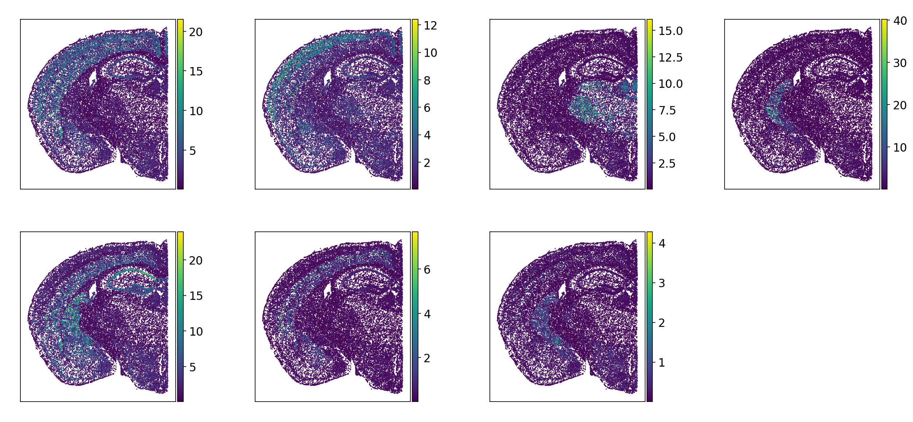
Calculate Spearman correlations
# Subset the AnnData objects to include only the genes in overlap_genes
# Assuming both AnnData objects have the same gene ordering
ad_true = adata_section[:, adata_section.var_names.isin(overlap_genes)]
ad_ge_predicted = ad_ge[:, ad_ge.var_names.isin(overlap_genes)]
# Initialize an empty dictionary to store correlations
correlation_dict = {}
# Loop over each gene to calculate Spearman correlation
for gene in overlap_genes:
# Extract gene expression vectors for the current gene
expr1 = ad_true[:, gene].X.flatten()
expr2 = ad_ge_predicted[:, gene].X.flatten()
# Calculate Spearman correlation for the current gene
corr, _ = st.spearmanr(expr1, expr2)
# Store the result in the dictionary
correlation_dict[gene] = corr
# Convert the dictionary to a DataFrame
tangram_correlations = pd.DataFrame.from_dict(correlation_dict, orient='index', columns=['correlations_tangram'])
# capitalize gene names!
tangram_correlations.index = tangram_correlations.index.str.capitalize()
tangram_correlations| correlations_tangram | |
|---|---|
| Satb2 | 0.521339 |
| Cux2 | 0.520271 |
| Zic1 | 0.438475 |
| Penk | 0.404159 |
| Bcl11b | 0.465106 |
| Fezf2 | 0.363526 |
| Dlx6 | 0.367113 |
Since we predicted the same genes as SpaGE, let’s compare the Spearman correlations:
all_correlations = pd.concat([correlations_spage, tangram_correlations],axis=1)
all_correlations[['correlations_spage','correlations_tangram']]| correlations_spage | correlations_tangram | |
|---|---|---|
| Satb2 | 0.569667 | 0.521339 |
| Cux2 | 0.624125 | 0.520271 |
| Zic1 | 0.560184 | 0.438475 |
| Penk | 0.462083 | 0.404159 |
| Bcl11b | 0.476352 | 0.465106 |
| Fezf2 | 0.428165 | 0.363526 |
| Dlx6 | 0.401532 | 0.367113 |
Which tool results in higher correlation between the true-measured gene expression and the predicted expression of the genes of interest?
# Record the end time
end_time = time.time()
# Calculate elapsed time in minutes
elapsed_time = (end_time - start_time) / 60
print(f"Execution Time Tangram: {elapsed_time:.2f} minutes")Execution Time Tangram: 2.20 minutesLet’s delete some objects we won’t be using anymore to free some RAM:
del ad_map, ad_geCell type deconvolution with cell 2 location
start_time = time.time()import squidpy as sq
import cell2location as c2l
sc.settings.verbosity = 3
sc.settings.set_figure_params(dpi=80, facecolor="white")# set raw layer as X
adata_sc.layers['raw'] = adata_sc.XDownload single-cell metadata with cell-type annotation with this command. the dataframe is already downloaded and can be read as csv
cell = abc_cache.get_metadata_dataframe(directory='WMB-10X', file_name='cell_metadata').set_index('cell_label')
<font size="3"> Add metadata with cell type annotation to the single-cell AnnData object
::: {#5ebc5d6d-8bf3-4dd7-965f-48abeefd0fdd .cell execution_count=104}
``` {.python .cell-code}
# read csv
metadata = pd.read_csv(f"{spatial_wd}/cell_metadata_with_cluster_annotation.csv",index_col=0)
# filter metadata to keep only obervations in the subsetted SC AnnData object
metadata = metadata.loc[metadata.index.intersection(adata_sc.obs.index)]
# reindex rows
metadata = metadata.reindex(adata_sc.obs.index)
# assign metadata to adata_sc.obs (in this way metadata replaces all fields previously in obs)
adata_sc.obs = metadata
adata_sc.obs.head()| cell_barcode | barcoded_cell_sample_label | library_label | feature_matrix_label | entity | brain_section_label | library_method | region_of_interest_acronym | donor_label | donor_genotype | ... | subclass | supertype | cluster | neurotransmitter_color | class_color | subclass_color | supertype_color | cluster_color | region_of_interest_order | region_of_interest_color | |
|---|---|---|---|---|---|---|---|---|---|---|---|---|---|---|---|---|---|---|---|---|---|
| cell_label | |||||||||||||||||||||
| GTATTCTCAGCTATTG-045_C01 | GTATTCTCAGCTATTG | 045_C01 | L8TX_180829_01_C10 | WMB-10Xv2-TH | cell | NaN | 10Xv2 | TH | Snap25-IRES2-Cre;Ai14-407905 | Snap25-IRES2-Cre/wt;Ai14(RCL-tdT)/wt | ... | 151 TH Prkcd Grin2c Glut | 0655 TH Prkcd Grin2c Glut_2 | 2650 TH Prkcd Grin2c Glut_2 | #2B93DF | #0D47A1 | #68e497 | #0F6652 | #FFB599 | 23 | #FF00EF |
| GTGTGATCACCAGCGT-468_A02 | GTGTGATCACCAGCGT | 468_A02 | L8TX_201217_01_D07 | WMB-10Xv3-MB | cell | NaN | 10Xv3 | MB | Snap25-IRES2-Cre;Ai14-556231 | Ai14(RCL-tdT)/wt | ... | 318 Astro-NT NN | 1160 Astro-NT NN_2 | 5214 Astro-NT NN_2 | #666666 | #594a26 | #AD5CCC | #1F8ECC | #2C00FF | 25 | #CC5CB0 |
| TAACCAGCACCAAATC-204.2_A01 | TAACCAGCACCAAATC | 204.2_A01 | L8TX_200122_01_F12 | WMB-10Xv3-MB | cell | NaN | 10Xv3 | MB | Snap25-IRES2-Cre;Ai14-504535 | Snap25-IRES2-Cre/wt;Ai14(RCL-tdT)/wt | ... | 327 Oligo NN | 1184 MOL NN_4 | 5285 MOL NN_4 | #666666 | #03045E | #99FFBC | #99CAFF | #5A662E | 25 | #CC5CB0 |
| AGCGTCGGTTCAGCGC-420_C06 | AGCGTCGGTTCAGCGC | 420_C06 | L8TX_201106_01_G03 | WMB-10Xv3-MB | cell | NaN | 10Xv3 | MB | Snap25-IRES2-Cre;Ai14-551017 | Ai14(RCL-tdT)/wt | ... | 327 Oligo NN | 1184 MOL NN_4 | 5284 MOL NN_4 | #666666 | #03045E | #99FFBC | #99CAFF | #5B2E66 | 25 | #CC5CB0 |
| AGACAAAAGAACTCCT-278_B03 | AGACAAAAGAACTCCT | 278_B03 | L8TX_200702_01_H01 | WMB-10Xv3-TH | cell | NaN | 10Xv3 | TH | Snap25-IRES2-Cre;Ai14-529474 | Snap25-IRES2-Cre/wt;Ai14(RCL-tdT)/wt | ... | 150 CM-IAD-CL-PCN Sema5b Glut | 0652 CM-IAD-CL-PCN Sema5b Glut_4 | 2644 CM-IAD-CL-PCN Sema5b Glut_4 | #2B93DF | #0D47A1 | #076600 | #CC7D7A | #7ACC7D | 23 | #FF00EF |
5 rows × 27 columns
:::
# identify the shared set of genes between spatial and single-cell
shared_features = [feature for feature in adata_section.var_names if feature in adata_sc.var_names]
# filter
adata_sc = adata_sc[:, adata_sc.var.index.isin(shared_features)].copy()
adata_section = adata_section[:, shared_features].copy() # probably no need to filter the spatial gene set
# reorder genes to have them match between spatial data and sc
adata_sc = adata_sc[:, shared_features].copy()
adata_section.shape[1] == adata_sc.shape[1]
print(f'Number of shared genes between spatial data and reference sc: {adata_section.shape[1]}')Number of shared genes between spatial data and reference sc: 1122# fit the reference model
selected = c2l.utils.filtering.filter_genes(
adata_sc, cell_count_cutoff=5, cell_percentage_cutoff2=0.03, nonz_mean_cutoff=1.12
)
adata_sc = adata_sc[:, selected].copy()
adata_section = adata_section[:, selected].copy()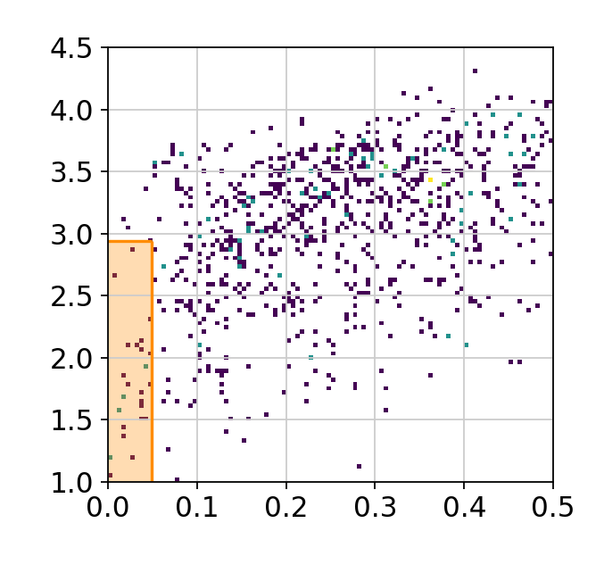
adata_section.shape(37068, 1089)adata_sc.shape(28981, 1089)c2l.models.RegressionModel.setup_anndata(
adata=adata_sc,
#batch_key="Replicates", # there's no batch
labels_key="class", # cell type = class
#categorical_covariate_keys=["assay"],
layer="raw",
)
model = c2l.models.RegressionModel(adata_sc)
# default, try on GPU:
model.train(max_epochs=250, batch_size=2500, train_size=1, lr=0.002)
model.export_posterior(
adata_sc,
sample_kwargs={"num_samples": 1000, "batch_size": 2500},
)INFO: GPU available: True (cuda), used: True
INFO:lightning.pytorch.utilities.rank_zero:GPU available: True (cuda), used: True
INFO: TPU available: False, using: 0 TPU cores
INFO:lightning.pytorch.utilities.rank_zero:TPU available: False, using: 0 TPU cores
INFO: HPU available: False, using: 0 HPUs
INFO:lightning.pytorch.utilities.rank_zero:HPU available: False, using: 0 HPUs
INFO: LOCAL_RANK: 0 - CUDA_VISIBLE_DEVICES: [0]
INFO:lightning.pytorch.accelerators.cuda:LOCAL_RANK: 0 - CUDA_VISIBLE_DEVICES: [0]Epoch 250/250: 100%|██████████| 250/250 [52:11<00:00, 14.47s/it, v_num=1, elbo_train=1.41e+7]INFO: `Trainer.fit` stopped: `max_epochs=250` reached.
INFO:lightning.pytorch.utilities.rank_zero:`Trainer.fit` stopped: `max_epochs=250` reached.Epoch 250/250: 100%|██████████| 250/250 [52:11<00:00, 12.53s/it, v_num=1, elbo_train=1.41e+7]
Sampling local variables, batch: 0%| | 0/12 [00:01<?, ?it/s]
Sampling global variables, sample: 100%|██████████| 999/999 [00:13<00:00, 73.60it/s]AnnData object with n_obs × n_vars = 28981 × 1089
obs: 'cell_barcode', 'barcoded_cell_sample_label', 'library_label', 'feature_matrix_label', 'entity', 'brain_section_label', 'library_method', 'region_of_interest_acronym', 'donor_label', 'donor_genotype', 'donor_sex', 'dataset_label', 'x', 'y', 'cluster_alias', 'neurotransmitter', 'class', 'subclass', 'supertype', 'cluster', 'neurotransmitter_color', 'class_color', 'subclass_color', 'supertype_color', 'cluster_color', 'region_of_interest_order', 'region_of_interest_color', '_indices', '_scvi_batch', '_scvi_labels'
var: 'gene_identifier', 'name', 'mapped_ncbi_identifier', 'comment', 'n_cells', 'nonz_mean'
uns: 'training_genes', 'overlap_genes', '_scvi_uuid', '_scvi_manager_uuid', 'mod'
varm: 'means_per_cluster_mu_fg', 'stds_per_cluster_mu_fg', 'q05_per_cluster_mu_fg', 'q95_per_cluster_mu_fg'
layers: 'raw'# export estimated expression in each cluster
if "means_per_cluster_mu_fg" in adata_sc.varm.keys():
inf_aver = adata_sc.varm["means_per_cluster_mu_fg"][
[f"means_per_cluster_mu_fg_{i}" for i in adata_sc.uns["mod"]["factor_names"]]
].copy()
else:
inf_aver = adata_sc.var[
[f"means_per_cluster_mu_fg_{i}" for i in adata_sc.uns["mod"]["factor_names"]]
].copy()
inf_aver.columns = adata_sc.uns["mod"]["factor_names"]
inf_aver.head()
# cell 2 location cell type mapping
print('start with Cell2location')
c2l.models.Cell2location.setup_anndata(
adata=adata_section,
#batch_key="kidney_n",
)
model = c2l.models.Cell2location(
adata_section,
cell_state_df=inf_aver,
N_cells_per_location=8,
)
model.view_anndata_setup()
print('start with training')
model.train(max_epochs=30000, batch_size=None, train_size=1)#, use_gpu=use_gpu)
adata_section = model.export_posterior(
adata_section,
sample_kwargs={
"num_samples": 1000,
"batch_size": model.adata.n_obs}#,
#"use_gpu": use_gpu,
)
adata_section.obs[adata_section.uns["mod"]["factor_names"]] = adata_section.obsm[
"q05_cell_abundance_w_sf"
]start with Cell2locationAnndata setup with scvi-tools version 1.2.1.
Setup via `Cell2location.setup_anndata` with arguments:
{ │ 'layer': None, │ 'batch_key': None, │ 'labels_key': None, │ 'categorical_covariate_keys': None, │ 'continuous_covariate_keys': None }
Summary Statistics ┏━━━━━━━━━━━━━━━━━━━━━━━━━━┳━━━━━━━┓ ┃ Summary Stat Key ┃ Value ┃ ┡━━━━━━━━━━━━━━━━━━━━━━━━━━╇━━━━━━━┩ │ n_batch │ 1 │ │ n_cells │ 37068 │ │ n_extra_categorical_covs │ 0 │ │ n_extra_continuous_covs │ 0 │ │ n_labels │ 1 │ │ n_vars │ 1089 │ └──────────────────────────┴───────┘
Data Registry ┏━━━━━━━━━━━━━━┳━━━━━━━━━━━━━━━━━━━━━━━━━━━┓ ┃ Registry Key ┃ scvi-tools Location ┃ ┡━━━━━━━━━━━━━━╇━━━━━━━━━━━━━━━━━━━━━━━━━━━┩ │ X │ adata.X │ │ batch │ adata.obs['_scvi_batch'] │ │ ind_x │ adata.obs['_indices'] │ │ labels │ adata.obs['_scvi_labels'] │ └──────────────┴───────────────────────────┘
batch State Registry ┏━━━━━━━━━━━━━━━━━━━━━━━━━━┳━━━━━━━━━━━━┳━━━━━━━━━━━━━━━━━━━━━┓ ┃ Source Location ┃ Categories ┃ scvi-tools Encoding ┃ ┡━━━━━━━━━━━━━━━━━━━━━━━━━━╇━━━━━━━━━━━━╇━━━━━━━━━━━━━━━━━━━━━┩ │ adata.obs['_scvi_batch'] │ 0 │ 0 │ └──────────────────────────┴────────────┴─────────────────────┘
labels State Registry ┏━━━━━━━━━━━━━━━━━━━━━━━━━━━┳━━━━━━━━━━━━┳━━━━━━━━━━━━━━━━━━━━━┓ ┃ Source Location ┃ Categories ┃ scvi-tools Encoding ┃ ┡━━━━━━━━━━━━━━━━━━━━━━━━━━━╇━━━━━━━━━━━━╇━━━━━━━━━━━━━━━━━━━━━┩ │ adata.obs['_scvi_labels'] │ 0 │ 0 │ └───────────────────────────┴────────────┴─────────────────────┘
start with trainingINFO: GPU available: True (cuda), used: True
INFO:lightning.pytorch.utilities.rank_zero:GPU available: True (cuda), used: True
INFO: TPU available: False, using: 0 TPU cores
INFO:lightning.pytorch.utilities.rank_zero:TPU available: False, using: 0 TPU cores
INFO: HPU available: False, using: 0 HPUs
INFO:lightning.pytorch.utilities.rank_zero:HPU available: False, using: 0 HPUs
INFO: LOCAL_RANK: 0 - CUDA_VISIBLE_DEVICES: [0]
INFO:lightning.pytorch.accelerators.cuda:LOCAL_RANK: 0 - CUDA_VISIBLE_DEVICES: [0]Epoch 30000/30000: 100%|██████████| 30000/30000 [1:33:46<00:00, 3.35it/s, v_num=1, elbo_train=1.84e+7] INFO: `Trainer.fit` stopped: `max_epochs=30000` reached.
INFO:lightning.pytorch.utilities.rank_zero:`Trainer.fit` stopped: `max_epochs=30000` reached.Epoch 30000/30000: 100%|██████████| 30000/30000 [1:33:46<00:00, 5.33it/s, v_num=1, elbo_train=1.84e+7]
Sampling local variables, batch: 100%|██████████| 1/1 [02:20<00:00, 140.75s/it]
Sampling global variables, sample: 100%|██████████| 999/999 [01:09<00:00, 14.44it/s]adata_section.write_h5ad(f'{spatial_wd}/stdata_deconv.h5ad')adata_section.obs| brain_section_label | feature_matrix_label | donor_label | donor_genotype | donor_sex | cluster_alias | x | y | z | subclass_confidence_score | ... | 16 HY MM Glut | 17 MH-LH Glut | 18 TH Glut | 19 MB Glut | 20 MB GABA | 25 Pineal Glut | 30 Astro-Epen | 31 OPC-Oligo | 33 Vascular | 34 Immune | |
|---|---|---|---|---|---|---|---|---|---|---|---|---|---|---|---|---|---|---|---|---|---|
| cell_label | |||||||||||||||||||||
| 299794030110334465835331169565547130392 | Zhuang-ABCA-1.080 | Zhuang-ABCA-1 | Zhuang-ABCA-1 | wt/wt | F | 196 | 5.873824 | 1.246374 | 6.757411 | 0.951445 | ... | 0.000440 | 0.000375 | 0.000383 | 0.000513 | 0.001199 | 0.000208 | 0.115745 | 0.034190 | 0.006665 | 0.000508 |
| 66045375924099067525605874805924532486 | Zhuang-ABCA-1.080 | Zhuang-ABCA-1 | Zhuang-ABCA-1 | wt/wt | F | 196 | 5.066814 | 1.215444 | 6.757411 | 0.990889 | ... | 0.000418 | 0.000054 | 0.000034 | 0.000193 | 0.001392 | 0.000369 | 0.000557 | 0.000258 | 0.000100 | 0.002435 |
| 116791314340621211157298988846240231316 | Zhuang-ABCA-1.080 | Zhuang-ABCA-1 | Zhuang-ABCA-1 | wt/wt | F | 196 | 4.681061 | 1.287158 | 6.757411 | 0.972796 | ... | 0.000155 | 0.000030 | 0.000030 | 0.000185 | 0.000318 | 0.000047 | 0.012837 | 0.000077 | 0.004797 | 0.000160 |
| 13950435409550353848526753205083905255 | Zhuang-ABCA-1.080 | Zhuang-ABCA-1 | Zhuang-ABCA-1 | wt/wt | F | 174 | 4.708601 | 1.292049 | 6.757411 | 0.995666 | ... | 0.000786 | 0.000336 | 0.000816 | 0.001343 | 0.003183 | 0.000407 | 0.040397 | 0.000437 | 0.119662 | 0.021737 |
| 147436316185400258367147717470263928395 | Zhuang-ABCA-1.080 | Zhuang-ABCA-1 | Zhuang-ABCA-1 | wt/wt | F | 174 | 4.729919 | 1.285492 | 6.757411 | 0.999973 | ... | 0.004426 | 0.000134 | 0.000123 | 0.000602 | 0.003589 | 0.000402 | 0.048852 | 0.001546 | 0.000159 | 0.005458 |
| ... | ... | ... | ... | ... | ... | ... | ... | ... | ... | ... | ... | ... | ... | ... | ... | ... | ... | ... | ... | ... | ... |
| 138771139060049685442837890240266124575 | Zhuang-ABCA-1.080 | Zhuang-ABCA-1 | Zhuang-ABCA-1 | wt/wt | F | 5231 | 1.083467 | 4.908302 | 6.757411 | 0.999978 | ... | 0.000025 | 0.000023 | 0.000028 | 0.000033 | 0.000047 | 0.000024 | 0.000196 | 0.174305 | 0.000264 | 0.000923 |
| 293280579073114219480073630362346662120 | Zhuang-ABCA-1.080 | Zhuang-ABCA-1 | Zhuang-ABCA-1 | wt/wt | F | 5231 | 1.084075 | 4.902757 | 6.757411 | 0.999968 | ... | 0.000035 | 0.000023 | 0.000033 | 0.000050 | 0.000103 | 0.002861 | 0.009330 | 0.631577 | 0.000144 | 0.000352 |
| 29789632307409269107735464912172084480 | Zhuang-ABCA-1.080 | Zhuang-ABCA-1 | Zhuang-ABCA-1 | wt/wt | F | 5231 | 0.973041 | 4.805131 | 6.757411 | 0.999985 | ... | 0.000018 | 0.000012 | 0.000626 | 0.000096 | 0.000053 | 0.000017 | 0.001566 | 0.721932 | 0.025739 | 0.000318 |
| 63992048193478335418190347526482691865 | Zhuang-ABCA-1.080 | Zhuang-ABCA-1 | Zhuang-ABCA-1 | wt/wt | F | 5231 | 0.865662 | 4.294161 | 6.757411 | 0.999959 | ... | 0.000019 | 0.000013 | 0.000011 | 0.000036 | 0.000043 | 0.000017 | 0.068745 | 1.068613 | 0.000251 | 0.002840 |
| 217820882131375786118651898970174983535 | Zhuang-ABCA-1.080 | Zhuang-ABCA-1 | Zhuang-ABCA-1 | wt/wt | F | 5212 | 0.841118 | 3.895234 | 6.757411 | 0.954223 | ... | 0.000579 | 0.000088 | 0.000050 | 0.000254 | 0.000727 | 0.000439 | 0.000461 | 1.076670 | 0.000577 | 0.000850 |
37068 rows × 51 columns
adata_sc.X# Record the end time
end_time = time.time()
# Calculate elapsed time in minutes
elapsed_time = (end_time - start_time) / 60
print(f"Execution Time Tangram: {elapsed_time:.2f} minutes")Execution Time Tangram: 159.19 minutesAdditional: access image in the AnnData object
from PIL import Image
import PIL
PIL.Image.MAX_IMAGE_PIXELS = Noneadata = sc.datasets.visium_sge(sample_id="V1_Mouse_Brain_Sagittal_Posterior")
adata.var_names_make_unique()
adata.var["mt"] = adata.var_names.str.startswith("MT-")
sc.pp.calculate_qc_metrics(adata, qc_vars=["mt"], inplace=True)reading /exports/humgen/bmanzato/spatial_workshop/data/V1_Mouse_Brain_Sagittal_Posterior/filtered_feature_bc_matrix.h5
(0:00:02)sc.pp.filter_cells(adata, min_counts=5000)
sc.pp.filter_cells(adata, max_counts=35000)
adata = adata[adata.obs["pct_counts_mt"] < 20].copy()
print(f"#cells after MT filter: {adata.n_obs}")
sc.pp.filter_genes(adata, min_cells=10)filtered out 259 cells that have less than 5000 counts
filtered out 291 cells that have more than 35000 counts
#cells after MT filter: 2805
filtered out 15603 genes that are detected in less than 10 cellsadataAnnData object with n_obs × n_vars = 2805 × 16682
obs: 'in_tissue', 'array_row', 'array_col', 'n_genes_by_counts', 'log1p_n_genes_by_counts', 'total_counts', 'log1p_total_counts', 'pct_counts_in_top_50_genes', 'pct_counts_in_top_100_genes', 'pct_counts_in_top_200_genes', 'pct_counts_in_top_500_genes', 'total_counts_mt', 'log1p_total_counts_mt', 'pct_counts_mt', 'n_counts'
var: 'gene_ids', 'feature_types', 'genome', 'mt', 'n_cells_by_counts', 'mean_counts', 'log1p_mean_counts', 'pct_dropout_by_counts', 'total_counts', 'log1p_total_counts', 'n_cells'
uns: 'spatial'
obsm: 'spatial'print('Number of spots in the GE matrix (section1, IN TISSUE): ', adata.shape[0])Number of spots in the GE matrix (section1, IN TISSUE): 2805
plt.rcParams["figure.figsize"] = (8, 8)
sc.pl.spatial(adata, img_key="hires", color=["total_counts", "n_genes_by_counts"])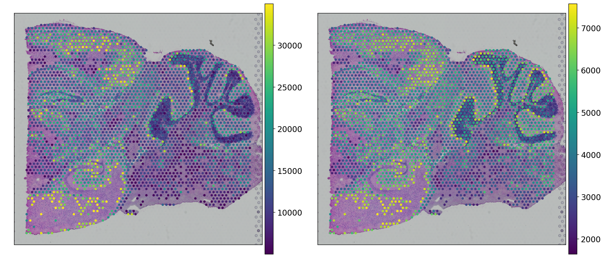
sc.pp.pca(adata)
sc.pp.neighbors(adata)
sc.tl.umap(adata)
sc.tl.leiden(adata, key_added="clusters", flavor="igraph", directed=False, n_iterations=2)computing PCA
with n_comps=50plt.rcParams["figure.figsize"] = (8, 8)
sc.pl.spatial(adata, img_key="hires", color=["clusters"]) # leiden# cluster marker genes
adata.var_names_make_unique()
sc.tl.rank_genes_groups(adata, "clusters", method="t-test")
sc.pl.rank_genes_groups_heatmap(adata, groups="9", n_genes=10, groupby="clusters")sc.pl.spatial(adata, img_key="hires", color=["Ddn"])EX 16: Replicate the analysis in the last section on another 10X Genomics Visium dataset. Check which datasets are available here